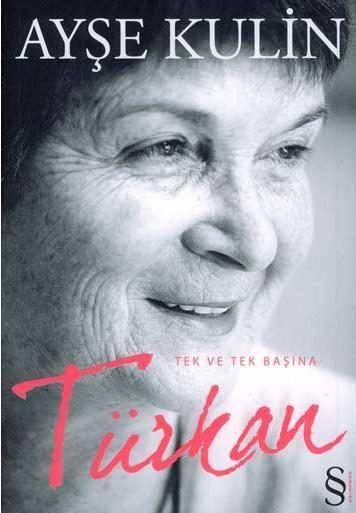

orum
Biyografi 46
Türkan Tek ve Tek Başına Ayşe Killin
ÖNSÖZ
cizgiliforum
Prof. Dr. Türkan Saylan'la, 2003 yılında, onun hayata geçirdiği ve sonradan benim adını KARDELENLER olarak değiştirdiğim, ÇAĞDAŞ
TÜRKİYE'NİN ÇAĞDAŞ KIZLARI adlı projenin kitabını yazmak için doğu illerine doğru yolculuğa çıkmadan önce tanıştım. Dostluğumuz ilerleyince, bi-yografisini yazmamı arzu etti.
Hakkında yazılmış pek çok kitap vardı. At Kız * kendi kaleminden hayatının belli bir bölümüne ait bir otobiyografiydi. Mehmet Zaman Saçlıoğlu'nun kaleme aldığı Güneş Umuttan Şimdi Doğar** ise, Hayatinin tüm evrelerini gözden geçiren, kapsamlı, özenli firtinali bir nehir söyleşiydi. Ayrıca, tıp ve eğitim
alanlarındaki çalışmaları da çeşidi kitaplarda toplanmış, bana yazacak pek bir şey kalmamıştı. Bunu ona söylemiştim ama isteğini yerine getirememiş olmak bir türlü içime sinmiyordu. 2008 yılının sonlarında, bir araya geldiğimiz bir gün, eğer kabul ederse, lepra dünyasına dair bir kitabı, onun üzerinden kaleme almayı önerdim.
vi
Türkan Hoca bana hastalanyla ilgili öyküler anlattı. Ne yazık ki o günlerde omuzumda oluşan bir sorundan ötürü üç ay boyunca sağ elimi kullanamadım.
Mart sonuna doğru iyileştiğimde, bu kez onun hastalığı çok ilerlemiş, iyice güçsüzleşmişti. Buluşmalanmızda onu yormaktan korkuyor, konuşturmaya çekmiyordum.
2009 yılının Nisan ayında Türkan Hoca'nın evi basıldı, kitaplarına, yazılarına, mektuplarına el kondu. Sonrası zaten bir rüzgâr hızıyla gelişti.
Türkan Hoca kaybettiği bedensel gücünü, baskından sonra, kısa bir süre için adeta geri kazandı, canını dişine takıp bitirmesi gereken tüm işlerini hızla tamamladı, beni son kez görüşmeye çağırarak kitapla ilgili bazı özel isteklerini aktardı, başkanı olduğu Çağdaş Yaşamı Destekleme Derneği'nin yirminci yıl töreninde konuşmasını yaptı ve sonra tedavisini durdurarak, aramızdan ayrıldı.
Cenazesine İstanbul'da yaşayan tüm iyi ve dürüst insanlarla, yurdun dört bir tarafından gelen lepralılar, burs verdiği çocuklar ve öğrenciler katıldı. Türkiye, bu muhteşem insana şükranlarını, 19 Mayıs 2009 tarihindeki cenaze töreninde, içtenlikle sundu.
En eski ve en yakın arkadaşlarından biri olan Gökşin Sanal'ın bana on üç yaşından itibaren yazıştıkları mektuplardan kendi seçtiği bölümleri vermesiyle, kitabımın önceden planladığım içeriğini değiştirdim. Yazacaklarım, Türkan Hoca'nın hayatının bugüne kadar kaleme alınmamış kesiteri üzerine yoğunlaşmalıydı. Hakkında yazılmış olanlardan az alıntı yapmaya, tekrara düşmemeye gayret ederek, bana emanet edilen alıntılardan yola çıkarak, hayatı boyunca”icinde yasattigi cocugu “ ve insani yanını öne çıkaracaktım; Zaten Gökşin Sanal, mektuplardan alıntıladığı s a t i r l a r i n başına, sevgili dostu için şöyle yazmıştı:
*Sevgili Türkan'ı tanıtıcı yazılar, yaşam öyküsü s a y i l a b i l e c e k k it ap lar yazıldı. Hepsi güzel a ma bence ek sik! Son gününe k adar icinde yaşattığı cocuğu, ak ıllı bu ka d ın olmasına karşın hep saf kalan yönünü baskalarini incitmemek uğruna düştüğü yanlışlari do st luk üzerine duygu, düşünce ve davranışlarini h e p m e r a k edilen aşklarını ya da aşk sandığı vii
i l i s k i l e r i n i
g ü n ü m ü z d e
cok
kişinin
yadırgayacağı
r o m a n t i z m i n i bugüne kad ar dile getiren olmadı Türkan Saylanin hayırlı yaşamının, tıp ve eğiitim alaninda yaptıklarının, müstesna kişiliğinin tek bir kitapta eksiksiz verilmesi zaten mümkün değil.
Okuyacağınız satırlarda, ben sadece ona verdiğim sözü tutuyor, bu eşsiz insanın portresine, birkaç fırça darbesi de ben vurmaya çalışıyorum; yılların soldurduğu ama çok özgün renklerle.
TÜR KAN
Tek ve Tek B aşına
viii
BÎR MASALIM VAR
Şubat 1999, Arnavutköy
Torunlarimı özledim. İtiraf edeyim, yaşamın hayhuyu içinde pek aklıma geldiklerini söyleyemem ama hastalığım nüksettiğinden beri, onlan sık düşünür oldum. Timur ile Tamer şu günlerde Almanya'da değil de burada olsalardı, onlara, "Bir zamanlar Boğaziçi'nde cokgüzel manzaralı bir ahşap köşkte kücük bir kız yaşardı" diye başlayan bir masal anlatmak isterdim: Masalımı, kendi keyfime göre kurgular, mutlu sonla bitirirdim. Belki gerçeğe tam uymazdı ama ne gam!
Masallar hayalleri anlatmaz mı zaten? Ben masalımdaki küçük kıza çook uzun bir hayat çizgisi bahşederdim. Neden mi? O kızın hâlâ yapmak istediği pek çok şey var da, ondan!
Torunlarıma anlatacağım masala, "Emirgan'da eski Mirgün iskelesinin arkasındaki Kuleli Ta-lı'nın üst katında, 1935 yılının bir kış
günü bir bebek doğmuştu. Bebeğe
annesiyle
babası
Türkan
adını
koymuşlardı. Türkan, dört-beş yaşına
kadar o evde yaşamış, konuşmayı,
yürümeyi hep o evde öğrenmişti ama
1
hayatı boyunca özlemini pektiği,
rüyalarında
gördüğü
evi,
ipinde
doğduğu ev değil de, babasının ailesi
ipin bizzat yaptığı, Kandilli'deki dört
katlı ahşap konaktı," diye devam
ederdim.
Torunlarım,
"Bu
Türkan
sen
olmayasın babaanne?" diye soracak
olurlarsa, gerçeği saklamazdım.
"Aferin size, bildiniz işte!" der ve dikkaderi
dağılmadan
arkasını
getirmek isterdim masalımın. Bir
süredir çocuklann aile öykülerini
bilmelerinde
fayda
olduğuna
inanmaya başladım. Gençliğimde hiç
düşünmezdim böyle şeyleri. Çınar'ın
Almanya'da doğan ve orada büyüyen
çocuklanna ailemizle ilgili hiç bilgi
vermemiştim.
Oysa
ölüler
hatırlandıkları sürece yaşarlar. Şimdi
sanki
Timur
ile
Tamer
benim
yanımdaymışlar gibi bir oyun kurmam
ve
onlarla
konuşuyormuş
gibi
yapmam hep bu açığımı kapatmak
için. Torunlarıma masal anlatır gibi
anlatmak istiyorum aile bireylerini ki,
benden sonra onların belleklerinde
yaşayadursunlar. Bu nedenle beni
2
duyduklarını
hayal
ederek,
Kandilli'deki evi, halimizi anlatıp
duruyorum.
Evimiz dört katlıydı ama biz sadece
iki katında otururduk. Kalabalık bir
aile
olduğumuzdan,
kardeşlerimle
benim hiçbir zaman tek başımıza birer
odamız
olamadı.
Büyüyüp
de
yuvamızdan
teker
teker
uçmaya
başlayıncaya kadar, yıllarca aynı
odayı
paylaştık
ve
eşyalarımızı
yataklarımızın
altındaki
kocaman
çekmecelerimizde sakladık. Ama o ev
sayesindedir ki, her zaman temiz
havada, kuşlarla, çiçeklerle, doğayla
iç içe yaşadık, babamın bahçeye
elleriyle diktiği ağaçlarla birlikte boy attık, birlikte büyüdük. İnanılmaz bir
hasrede, işte o eve dönmeye başladım
ben, hem de sık sık. Üst bahçede, ba-
baannemin
gölgesinde
sigarasını
tüttürdüğü, salıncağımızın asılı olduğu
iki büyük ceviz ağacının arasında
duruyorum ve çocukluğumu yeni
baştan yaşıyorum. Çınarlardan birinin
korunaklı
dallarına
kardeşlerimle
yastıklar, tahtalar koyarak bir ağaç-ev
kurmuştuk. Okuldan döner dönmez ilk
3
işimiz
ağaç
evimize
tırmanmak
olurdu. İyi havalarda ödevlerimizi bile
orada
yapardık.
Babamın
eve
dönüşlerini de oradan gözlerdik, eğer
onu karşılamak ve elindeki paketleri
taşımak üzere çoluk çocuk Kandilli
Vapur İskelesi'ne gitmemişsek.
Annem her sabah mor jarse
sabahlığı ve özenle taranmış bukleli
saçlarıyla, pınl pırıl giyinmiş babamı
evimizin kapısında işine yolcu ederdi.
Biz
çocuklar
da
kapı
önüne
doluşurduk,, babam, annemden sonra,
yaş sıramıza göre yanaklarımıza birer
öpücük kondursun diye. Babamla
annemin yakınlaşmalarına tek şahit
olduğumuz
anlar
işte
bu
kapı
önündeki veda fasıllanydı. Bunun
dışında biz an-
nemizle babamızı hiç öpüşüp koklaşırken, aynı yatakta yatarken veya birbirleriyle flört ederken görmedik. Şimdi düşündüğümde, birbirine çok âşık iki insanın bunu nasıl başardıklarına akıl erdiremiyorum!
4
Biz beş kardeştik. Ben ilk çocuktum, benden on ay küçük kardeşim Tuğrul, 1939'da doğan Turgut, 1940'lı, güzeller güzeli kız kardeşim Turhan ve nihayet sapsarı saçlarından dolayı San Kabak diye çağırdığımız Gündüz! En büyükleri ben olduğum için herhalde, hep anaç bir tarafım oldu benim. Annem, bir akrabasının vefan sırasında hayatının bizsiz tek yolculuğuna çıkarken, kardeşlerimi bana emanet etmişti. Onlara laf geçirmek için, annemin bir elbisesini giymiş, yerlerde sürünen eteklerimle kardeşlerime kol kanat germeye çalışmıştım, Yaşamım boyunca kendimi tüm çocuklara karşı sorumlu hissetmem, evimi çocuklarla doldurmanı, o günlere duyduğum özlemden mi kaynaklanıyordu acaba?
Torunlarimı bana sorular sorarken hayal ediyorum, "Senin babaannen nasıl biriydi, babaanne diyor Timur.
Babaannem Nadide Hanım önce gencecik kocasını sonra da dört yaşındaki kızını kaybetmiş acılı bir kadındı. Dul maaşıyla zor şartlarda büyütüp okuttuğu iki oğlu, bir gün okuldan eve dönerlerken Gatlata Köprüsü üzerinde askere alınıp Balkan Savaşı 'na gönderilivermişlerdi.
Babaannem savaş sonrasında amcamı da genç yaşında kaybedince, hep bizimle birlikte yaşadı. Biricik oğlunun evinde cok mutlu ve huzurlu bir yaşamı olduğunu sanmıyorum, cünkü oğlunu pek sevmediği ecnebi geliniyle paylaşmak zorunda kalmıştı. Annem ve babaannem, aralarındaki mesafeyi kapatmamak ipin de birbirlerine hep, 'hanımefendi/ diyerek hitap ettilert" diye anlatıyorum.
Yok yok! Bunları anlatmam doğru olmaz tonlularıma! Aile içindeki tatsızlıkları bilmelerini islemem. Aslında tatsızlık da denemez, ama bir tuhal sürtüşme vardı iki kadının arasında. Babaannenim hayattaki en büyük rakibi, isviçreli annemdi. Din değiştirip Müslüman olması, Türkçeyi eksiksiz ögrenmesi ve birbiri ardına çocuklar doğurması bile kâfi gelmemişti babaannemle arasındaki buzlan •• İlmeye. Babaannem beni ve 5
kardeşlerimi biz kü- Silkken masallarla, şekerlerle etrafına toplar ve bize sürekli annemi çekiştirirdi. Ona inanır, üzülürdüm, babaannemin etkisinden ancak sekiz dokuz yaşıma
geldigimde kurtulabilmiştim.
Babaannem hayatının tek ışığı, sevgili oğlu Fatih'i kaybedince aklını da onunla birlikte yitirdi. eminim oğlunun peşine takılıp gitmeyi tercih ederdi ama babamın ardından uzun yıllar yaşadı. Asil isınamadığı gelini ise, ona, "hanımefendi" de- mekten vazgeçip "babaanne," demeye başladı ve bin bir işinin yanında ölünceye kadar hiç şikâyet et- rtieden baktı, kendini sevmeyen kayınvalidesine. Yangın çıkarmasın, bir yaramazlık yapmasın diye peşinde gezdi, yemeğini elleriyle yedirdi, altını bezledi senelerce.
Annemin ne kadar çilekeş ve fedakâr bir insan olduğu bana ne yazık ki ölümünden sonra dank etti. Ancak onu kaybedince anlayabildim hayatının ne kadar zor olduğunu.
Ah annem!
Çok geniş bir yatak odası ve yeşil lake bir yatak takınıı vardı annemin.
Yeşil lake yatağında, özellikle lohusalıklannda, en sevdiği renk olan mor geceliklerle yatışı gözlerimin önünde şimdi! Hayata İsviçre'nin Zürih'e yakın Melingen Kasabası'nda, bir teknisyenin kızı, Lilly Reinmann olarak başlamıştı. Ailesi sonra İngiltere'ye göç etmiş, büyükbabam zarflan içinde pek çok patent sahibi bir mucit olarak iyi para kazanmış ve kızını İsviçre'nin çok iyi bir okulunda okutmuştu. Annem, İngilizceyle Alman -
casının yanı sıra Fransızcayı ve piyano çalmayı bu okulda öğrenmişti.
Babam ilk evliliği nedeniyle İstanbul'da yaşamakta olan, sanşın, yeşil gözlü, güzel annemle tanışır tanışmaz ona o kadar âşık olmuş ki, hemen evlenme teklif etmiş. Bir yıl sonra da b^n doğmuşum.
6
önceleri ailesine rahat, hatta lüks bir hayat ya- şatabilen babamın işleri ben ilkokulu bitirdiğim yıllarda bozulmaya başladı. Evimizdeki yardımcılar teker teker işlerini bıraktılar. Mısır Çarşısı'ndan bol ve toptan alınan yiyecekler, mahalle bakkalından gramla alınmaya, dikkatli tüketilmeye başladı. Pişirilecek malzemenin bulunamadığı günleri bile gör-dük. Annem öyle günlerde bayat ekmekleri sütle ıslatıp üzerlerine yumurta kırarak lezzetli yemekler yapardı. Şeker yokluğunda ise çayı kuru üzümle içerdik. Bunlar biz çocuklar için eğlenceli oyunlardı ama belli ki babam hayada mücadelesinde çok yıpranmaktaydı. Henüz elli sekiz yaşındayken, kırık bir gönülle yitti gitti, sevgili karısını, bunamış annesi ve beş
çocuğuyla geride bırakarak. Allahtan o günlerde ben kendi ailemi kurmuş, annemin sırtından inmiştim.
Babamdan sonrası, bütün Saylanlar için hep bir hayat kavgasıdır!
Benim torunlarıma aktarmak istediğim, babamın da, babaannemin de hayatta olduğu, bahçeli evimizde bir arada, geniş bir aileye ait olmanın sı-
caklığını hissederek yaşadığımız çocukluk yıllarımız, galiba. Her kalabalık ailenin yaşamı bir masaldır, bence.
Yarın Çınar hatırımı sormak için telefon ettiğinde ona ilk fırsatta oğlanları İstanbul'a getirmesini söyleyeceğim. Okul tatillerine kadar ömrüm vefa ederse, torunlarıma anlatacak bir masalım var.
7
ŞAFAK SAYARKEN
as
12 Nisan 2009, Arnavutköy.
Birkaç günden beri boğazımdan hiçbir şey geçmiyor. Son kemoterapi seansı mide bulantılarımı artırdı. Beni serumla beslemeye çalışıyorlar ama ellerimde kollarımda serumu saplayacak damar da kalmadı artık. Her tarafım delik deşik. Hızla yaklaşmaktayım kaçınılmaz sona. Birkaç işim kaldı yapılacak. O işleri tamamlamanın telaşındayım. Sonra tüm tedaviyi kestireceğim. Bu nefes nefese koşu bitecek. Dinlenmek benim de hakkım.
Uyumak huzur içinde! Uzun zamandır uykularım da yok çünkü. Yatağın içinde sabahı bekliyor, eğer halim varsa, kalkıp şafağın söküşünü seyrediyorum günlerdir.
Şafakta gökyüzü önce kıpkırmızı oluyor sonra turuncuya çalıyor, sarariyor, pembeleşiyor, mavile- şiyor dakikalar geçtikçe, sanki renkler birbirinin içine akıyor, birbirinin içinde eriyor, tarifi mümkün olmayan, inanılmaz bir güzellik kaplıyor göğü.
Bunca yıl hep mehtap delisi oldum ben. En ince hilalden başlayarak, takip ederdim ayın gelişip dolunaya erişmesini. Dolunayı gördüğüm an, 9
nerede olursam olayım, odaklanırdım bu muhteşem güzelliğe. Evdeysem, iskemleyi pencerenin önüne çeker, mehtabın tam karşısına oturur, uzun süre seyrederdim çocukluğumun aydedesini. Yuvarlağın üzerine çizilmiş
surete bakar, bana göz kırpmasını, bir şeyler söylemesini bekler, daha da ileri gider, gerçekten bir şeyler söylediğini farz ederdim. Ay, gökyüzünden fısıldardı kulağıma duymak istediğim şeyleri. Mesela Bursa'ya tayinim çıktığında, "Çocuklarımı nasıl bırakır da giderim?" diye sormuştum, sağ köşesinden azıcık ısırilmış bir somuna benzeyen aya.
"Çocuklarını da yanında götürürsün, Bursa'da okul mu yok!" demişti.
Günler sonra rahat bir uyku çekmiştim o gece. Niye hiç düşünememişim o gün gökyüzüne bakana kadar, çocuklarımı da yanıma almayı. Ben ki onları ihtisas için Londra'ya giderken dahi geride bırakmamış, yanıma almışım, yıllar sonra! Bana, "Deli misin, Londra'da çocuklar ne yapar?"
diyenlere, "Londra'da okul mu yok?" diye yanıt vermiştim. İşte böyle bir iletişimdi, ayla aramızda olan. Hatta bir zamanlar, Fulya'da dimdik bir yokuşun üzerindeki evi, sırf penceresinden mehtap gözüküyor diye kiralamıştım da deli demişlerdi bana arkadaşlarim. Oysa şafak da aydede kadar güzelmiş meğer! Muhteşemmiş! Kalan zamanımın hiçbir şafağını kaçırmak istemiyorum. Şafak sayıyorum kısacası, terhise az kaldı.
Dün yine şafağa yakın, yattığım yerden perdeyi aralayıp gökyüzünü izlemeye başlamıştım ki bir ara içim geçmiş. Merdivendeki ayak sesleriyle uyandım. Gökşin gelmiş erkenden. Şaşırdım. Geceleri yatmak bilmediği için erken kalkamaz çünkü o. Bazı günler on bire kadar yatakta kaldığı olur. Odamın kapısında elinde bir torba, bir de mis gibi kokan, fırından yeni çıkmış bir ekmekle dikiliyordu.
"Hayrola," dedim, "sen de mi beni rüyanda gördün yoksa?"
"Biri seni rüyasında mı görmüş?" diye sordu.
"Halime görmüş, kalkmış Tunceli'den buralara kadar gelmiş."
10
"Halime hangisiydi, üvey oğullarından sürekli dayak yiyen kadın mı?"
"O Yeter'di. Hani bacağını donmuş diye keseceklerdi de, ben muayene sırasında ellerken bir sıcaklık hissetmiştim, kurtarmıştık bacağı.
Ne bakıyorsun öyle, hatırlamadın mı?"
"Ay Türkan, o kadar çok hastan var ki senin, hangi birini hatırlayayım, Allahaşkına! Rüyasında seni nasıl görmüş, sen bana onu söyle."
"Vallahi, merak edip sormadım. Ama pek hoşuma gitti doğrusu, helalleşmek için ta buraya kadar gelmesi. Sen niye bu kadar erkencisin?
Erken uyan- mazdın sen."
"Dün gece uyumadım ki uyanayım. Şu ne zamandır isteyip durduğun gençlik mektuplarımız var ya, dün, akşam yemeğinden sonra gardırobun üstünden mektup kutularını indirdim, sabaha kadar mektup ayıkladım.
Türkan, inanılır gibi değil, mektuplaşmaya 1949 yılında başlamışız.
Haftada üç, dört kez yazıştığımız olmuş. Her biri en az on dört-on altı defter sayfası olmak üzere, kutular dolusu mektup vardı. Hepsini tek tek döktüm önüme, kimini baştan sona okudum, kimini atlaya atlaya. Kâh ağladım, kâh güldüm. Arada bir mutfağa gidip çay koyuyordum uykumu açsın diye. Gün ışıdı, sabah oldu. Saate son baktığımda yedi buçuğa geliyordu. O saatte yatağa girmedim artık, zaten henüz soyunmamıştım bile. Mektupları bir poşete attım, yüzümü yıkadım, çıktım evden, köşedeki fırından bir ekmek kaptım, taksiye adadım geldim. Kahvaltını ettin mi sen?"
"Zeynep hazırlıyordu tepsimi. Seslen de sana da bir tabakla bir bardak çay koysun tepsiye," dedim.
"Ekmeği de vereyim dilimlesin," dedi Gökşin ve kucağıma bir tomar mektup bırakıp dışarı çıktı. O yaşlarımızın elyazısıyla yazılmış ortaokul 11
mektupla- nnı mavi, lise yıllarını kırmızı kurdeleyle, üniversite yazışmalarını da bir sicimle bağlayarak ayrıştırmış.
1990'lara kadar, önceleri haftada birkaç kez, sonra da giderek seyrekleşen bir tempoyla yazış- ınıştık Gökşin'le. Kandilli Kız Lisesi'nde okurken, yazları ayrılırdık. Her geçen günümüzün nerdeyse her saatini mektuplarda anlatırdık birbirimize. Liseyi bitirince ben İstanbul'da Tıp Fakültesi'ne gittim, Gökşin Ankara'da Dil Tarih'e yazıldı. Mektuplarımız hızlandı. Onun yeniden İstanbul'a dönüşüne kadar, tüm yaşadıklarımızı mektuplarda paylaştık. Bana hiç yayınlamadığı ama hayatı boyunca yazdığı şiirlerini de yollardı. Sadece gündelik hayatımızın ayrıntılarını değil, okuduğumuz tüm romanları, öyküleri, şiirleri de mektuplarda tartışır, karakter tanımlamaları yapardık. Yıllar içinde hayat yükümüz çoğaldıkça mektuplarımız azaldı ama hiç kesilmedi. Son yıllarda, aynı şehirde yaşadığımız halde, sadece doğum günlerimizde kart atmakla kalmamış ara sıra yine mektuplaş mıştık.
Gökşin'in bana getirdikleri ilkgençlik dönemimizde yazdığımız mektuplar. Onlara göz atarken boğazıma bir yumru geldi oturdu. Ben on beş yaşımı sürerken, ne Kürt ne de türban sorunumuz vardı. Sağ sol kavgaları dahi başlamamıştı henüz. Bugünün gençliğine göre inanılmaz saf, idealist, aynı zamanda da dertsiz olduğumuz o günlerde okudukça gördüm ki, kendimi kaptıracak siyasi gruplaşmaların da farkında olmadı-
12
ğımdan, bana büyük laflarla edebiyat döktürmek düşmüş!
kavuşunca anlatacak şeyimiz kalmaz Emi, böylesi daha hayırlı
"... Ah Gökşin, her yerimden kalkışta mehtaba bir kez daha Aynı yıl, bir yaz mektubu daha:
bakıyorum, öyle nefis ki! O ışık sütunu ta uzaklara kadar efsunkâr bir kıvrılışla uzanıyor\ kâh genişliyor, kâh daralıyor, sular sakin ve ışıklar o 1112 Ağustos'ta Demokrat Partinin Taksim Belediye Gazinosunda kadar cazip ve bambaşka ki hipbir şair onu mısralarima, hiçbir ressam eğlencesi var. Gitmek istiyorum la hu münasip bir elbisem yok. Niyetim bir tablosuna alamaz ve hiçbir bes-keten dikmek. Ama gitsem bile dans etmeyi bilmediğimden dolayı kukumav gibi oturacağım. Elbette an- nemle gideceğim ve annem dans etmeme izin tekâr onun melodisini bulamaz. Bu tablo, eserleri kopya edilemeyecek bir verebilir u ma bilmedikten sonra! Sen ne dersin, gideyim m g it me ye yim sanatkârın elinden çıkmıştır. Şu yeni resim görüşü ve stili (soyut resmi mi?
kastediyor olmalıyım), belki de insanın tabiat karşısındaki bu büyük yenilgisinden, bunu idrak etmesinden sonra başlamıştır.Tokta varı aramak!*
Vay Vay! Ben ne müthiş bir romantikmişim on beş yaşımı sürerken!
Aslında romantizmle hiç bağdaşmayan mesleğime ve ayaklarımı yere sert bastıran hayat çizgime rağmen, içimdeki saf çocuğun yoğun duyguları yıllar içinde azalsa da, bu yaşıma dek beni tamamen terk edemedi. Hele de ay ışığı-
I ııa olan tutkum. Doğa güzelliklerinin bende yarattığı coşkuyu kaleme döküp arkadaşlanma her zaman yollamıyorum artık ama hâlâ etkileniyorum onlardan. Günbatımını, şafağı, mehtabı seyrettiğimde ya da yıldızlarla dolu lacivert göğe baktı- , ğımda içime sevinç doluyor. Acılanma rağmen, ya-
şadığıma şükrediyorum.
Elimdeki mektubu, aşın romantizminden biraz da utanarak önümdeki sehpaya bıraktım. Bir başkasını çektim rastgele. Bu seferki de, Ağustos 1950
tarihli.
"... Senden son gelen her iki mektup da evde sansürden geçmedi ama yine de ben sana bir şifre vereyim. Mühim yerleri ayrı bir sayfaya yaz ki okur okumaz saklayabileyim. Ne olur ne olmaz, belki evden okurlar. Ben sana yazdığım 8 sayfalık mektubu anneme okudum, o da pekiyi, postala bakalım, dedi ve sonra da bahçeye çıktı. Şimdi, sana aceleyle tekrar yaziyorum, rica ederim bana böyle arkadaş mektuplun yazmaya devam et ama onları şifreli yazma. tesadüfen ellerine geçebilir. Ne olur ne olmaz. Hem de birbirimize 14
15
... Peder Bey bugünlerde iyice mutaassıplasti. Her sabah giderken, evin ve babam Ankara'ya kardeşim Turgut'la gideceğimi söylüyordu. O an benim dışına annesiz cıkmak yasak, diye tembih ediyor. Annem de peki, diyor. Baba-için Ankara yolculuğunun bütün büyüsü kaçtı. Bu da bir şey mi? Yirmi ma göre, annemin işi bitene kadar evde oturmalıyım. Allahtan Avrupalı bir yasında, üniversite öğrencisi koskoca bir kızken dahi, hafta sonlari annem var da kardeşlerimle denize inmeme izin veriyor. Akşamüstleri de arkadaşlanmla buluşmaya giderken, mutlaka peşime kardeşlerimden birini ta-annemle Kücüksu Gazinosu 'na gidiyor, oturuyoruz. Çok hoş oluyor.*
karlardı. Ne kadar utanır, mahcup olurdum. Tutucu ve yasakçı anne babadan çok çektiğim için, ben olabildiğince serbest bırakarak büyüttüm kendi Bu satırları okuyunca ilkgençliğimin sıkıntıları yüreğime geri döndü. çocuklarımı!
Yetişirken en büyük derdim annemle babamın aşıri disiplinli, korumacı tavırlari olmuştu. Yeni yetme Türkan'a hemen her şeyi yasaklamışlardı.
Kırmızı kurdeleli tomardan bir mektup çektim: Belleğim bu aşın korumacılığa dair, kimi komik kimi üzücü anılarla dolu.
Örneğin lise üçüncü sınıfta okurken, uluslararası bir kültür kurumu, bir lise Şu kâğıda cok özenerek başladım, annem geld i de min, bakayım öğrencisini yurtdışına göndermek için İngilizce sınavı açmıştı. İngilizcem dedi, ben geri cektim, o ısrar etti yırtar gibi yaptım, sonunda verdim o kudu.
iyiydi. Babam nasıl olduysa razı olmuştu sınava girmeme. Benim platonik bir t ür lü intikal edemedi âşık olduğumu. Sinirli sinirli g ü ldü m, şimdi de duygularla bağlandığım keman hocam o sırada Ankara'da çalışıyordu. Hemen ağlıyorum, asabım bozuk. Bu ya st a n sonra pek düşüncesiz hareket ediyor, hocama mektup yazıp sınav yerini ve saatini bildirdim. Sınav sabah yapılacak, öyle hu yo r k i beni. Bazen pek iyiyiz, bazen de en basit ko nud a atışıyoruz *
akşam treniyle dönene kadar, onunla buluşacaktım. Beni Çankaya'ya çıkaracak, sonra da hayvanat bahçesine götürecekti. İstasyon Lokantası'nda Vukardaki mektubu 23 Mart 1953'de yazımısim Gökşin mektuplan birlikte çay içecek ve eve dönmek üzere trenime binecektim. Çocukluk bu ya, ayırirken iyice yorulmuş olmalı kı üniversite yıllarina ait mektubu lise eğer onun da bana karşı hisleri varsa, baş başa kalacağımız bu sıralarda, torbasinn içine katmış yanlışlıkla. Kime âşıktım acaba?
hislerini bana belli eder diye umutlanıyordum. Eteklerim zil çalıyordu. Fakat babam tren biletini bana uzatınca kahrimdan ölebilirdim. Elinde iki bilet vardı 17
16
Düşündüm ama hatırlayamadım. Bu kadar korumalı yetiştikten sonra fakülteye ilk girdiğim yıl, kendimi erkek öğrencilerin ortasında bulunca, okul kantininde ya da sınıflarda birkaç kere üst üste göz göze geldiğim gençlere âşık olduğumu zannederek geçirmiştim ilk dönemi. İkinci dönem toparlanmıştım; onlarla aynı sıraları paylaştıkça, birlikte sınav heyecani çektikçe,
notlarımızı
karşılaştırdıkça,
erkek
arkadaşlarımın
kız
arkadaşlarımdan hiçbir farkı olmadığını görüyordum. Ben, erkek ve kız arkadaşlarım arasında fark gözetmemeyi öğrenmiştim ama üzerimdeki ev baskısı devam ediyordu. Üniversiteli kızlar sınıf arkadaşlarıyla gezmeye, sinemaya giderken, annem hâlâ peşime kardeşlerimden bir ikisini takıp beni küçük düşürüyordu. Beni bu kadar sıkı bir disiplinle ve yüksek ahlaklı yetiştirdikten sonra, bari bana itimat etmesini becerebilselerdi ya, annemle babam!
Evlenene kadar üzerimdeki baskı devam etti, annem benden giden ve bana gelen mektuplarımı okudu, sınıf pikniklerinde peşime kardeşlerimi takmadığı zaman da, tesadüfmüş gibi kardeşlerimle birlikte, bulunduğum yerlerde arz-ı endam eyledi. Bu mektubu kendi grubuna katmak için kenara ayırdım.
Bir mektup daha, yine lise tomarından! Tarihi 23 Haziran 1952:
" Kad ir gecesi âdetim hilafına camiye gidip sa- kal'i şerifi öpemedim.
Bütün gün oruçluydum. O akşam teravih'egittik."
Gülmeye başladım. Bu benim kaderim miydi ne? Sıkı bir dini eğitimden geçmeme, çocukluğumu sofu babaannemin anlattığı hurafeleri dinleyerek geçirmeme, esaslı bir din eğitimi almama, İslam'ı kendini sıkı Müslüman zanneden pek çok kişiden daha iyi kavramış olmama rağmen, yıllardır bir takım kötü niyetli insanlar "gâvur" olduğumu İddia eder dururlar. Bu kelimeyi de hiç sevmem. Müslüman olmayanları küçültücü bir kelimeyle ayristirmak, edepsizlikten başka bir şey değildir, bence Tüm dinlerin Allah'a giden yolda bir vasıta olduguna inandığım için, hayatım boyunca hiçbir dini kücümsemedim. Bizim kitabımız, diğer dinlerin peygamberlerine saygı talep eder zaten. Kendimi sadece ve hep Müslüman bildim.
23
İlk dini eğitimim çok küçük yaşta, evde başlamıştı Çocukken namazı, aptesti ve Kuran sürelerini babaannemizden öğrenmiştik ama bilinçli Müslümanlar olmamız için, ilkokula başladığınızda babam okulumuzun Türkçe öğretmeninin bana ve kardeşlerime özel din dersleri vermesini istemisti Hafız Ahmet Bey, her hafta sonu bize gelir, bize dinlerin çeşitlerini, nasıl çıktıklarini Müslümanlığın diğer dinlerden farklarını, kurallarini ve bu kuralların gerekçelerini anlatırdı. Unlu Ahmet Bey sayesinde, ben, iyi bir Müslümanin Dürüst Temiz, çalışkan, saygılı, yardımsever baskalari acken rahatsizlik duyan h a k yemeyen, haksızlık etmeyen vc gösterişten uzak duran bir insan olması gerektiğini, çalışmanın da bir nevi ibadet olduğunu küçük yaşta öğrendim. Hocam bizlere Allah korkusu değil, Allah sevgisi aşılamıştı. Hocamın çocuklarıyla birlikte, Ramazanlarda teravihe giderdik.
Ortaokula geçtiğimde, Kadir geceleri, gündüz oruç tutmaya geceleri evin çalışanlarıyla birlikte Kandilli Cami- i'ne gitmeye başladım. Bu gecelerde,
"Allahüm- me salli ala..." okunurken, bazı cami ahalisi "Allah!" diye haykırırdı. Babaannem bu insanların o anlarda Allah'la buluştuklarını söyleyince, ben de o kişilerle birlikte haykırır olmuştum ama dört gözle beklediğim bu buluşma hiç gerçekleşmemişti. O camide, Kadir geceleri bir de Sakal-ı Şerif çıkardı. Sakal-ı Şerifi öpmek için sıraya girenlerin arasına büyük bir heyecanla katılırdım. Sınıfımdaki yaşıtarım arasında İslam dini hakkında benim kadar malumadı ve dualan baştan sona bilen başka çocuk yoktu herhalde. Bir gün edebiyat dersinde Divan Edebiyatından bir şiir okurken, öğretmenimiz, bir Arapça kelimeye dili dönmeyen arkadaşımızı azarlamış, "Osmanlıca kelimeleri doğru dürüst okuyamıyorsunuz! Sizler Allah bilir, duaları da yalan yanlış telaffuz ediyor, anlamlarını dahi bilmiyorsunuzdur. Aranızda doğru dürüst dua edebilen vc söylediğinin manasını bilen biri var mı?" diye sormuştu. Koca sınıfta sadece benim parmağım kalkmıştı havaya.
"Sen mi dua bildiğini iddia ediyorsun Türkan?" demişti öğretmen.
Herhalde annesi yabancı olan öğrenciden böyle bir beklentisi yoktu.
20
"Evet efendim."
"Hangi duaları biliyorsun?"
"Hepsini..." Ne olur ne olmaz korkusuyla, "Çoğunu," diye düzeltmiştim hemen.
"Amentü'yü oku."
Okudum. Bana birkaç dua daha okutmuş, anlamlarinı söyletmiş ve benden başka hiç kimsenin baştan sona bir duayı düzgün şekilde okuyamadı-
ğını görünce pek şaşırmıştı.1
Benim telaffuzum iyiydi ama dünyaya Katolik gelip sonradan Müslüman olduğu için, açığını kapatmak ve özellikle de babaannemin gözüne girmek adına Kuran'ı hatmeden ama sureleri ancak İsviçre aksanıyla okuyan zavallı annemle çok dalga geçerdik, kardeşlerimle. Çocukluğumuzda bizlere verilen dini eğitimin bir sonucu muydu, her işe besmeleyle başlayan babaannemin etkisi miydi bilemem ama bir bilim insanı olmama rağmen, hayatım boyunca dudaklarımdan dua hiç eksilmedi. Hastalarımın iyileşmesi, işlerimin yolunda gitmesi, oğullarımın okullanndaki başarıları için duaya sık başvurdum ve çoğunu duydu, Allah!
1 At Kız, s. 52-53.
20
Mektup elimde, "Gökşin, gel, gel! Şu mektubu medyaya sızdıralım da adımı gâvura çıkaranları utandıralım. Gel bak, neler yazmışım!" diye seslendim, yanıt alamayınca kulak kabarttım; Gökşin, "Dünden beri hiçbir şey yemedi mi gerçekten?" diye soruyordu Zeynep'e.
Demek erken gelişine bir bahane bulmak için getirmiş mektupları diye düşündüm, birlikte kahvaltı edersek bana yedirebileceğini zannediyor. Bana laf geçiren ender kişilerden biridir, Zeynep telefonda ona hiçbir şey yemediğimden şikâyet etmiş olmalı. Gökşin'le altmış üç yıl önce Kandilli Kız Lisesi'nin orta birinci sınıfında buluşmamızdan bu yana, hiç ayrılmamış
olmamızın yanı sıra, sırdaşımdır, yakınımdır, derdimi döktüğüm, akıl danıştığım, tavsiyelerine uyduğum can arkadaşımdır! Benden on üç gün büyük olduğu için, bana hayatım boyunca hep ablalık tasladı. Ben de o ne söylediyse munis bir kardeş gibi dinledim sözünü. Ama bu sefer boşuna zahmet etmiş Arnavutköy'e kadar. Boğazımdan tek bir lokma geçmiyor.
Elinde kahvaltı tepsisiyle Zeynep ve Gökşin birlikte içeri girdiler.
Zeynep kucağımdaki mektupları alıp tepsiyi dizlerime koydu. Gökşin, tepsiden kendi çayını aldı, karşımdaki koltuğa yerleşti, çayından birkaç yudum içtikten sonra kalkıp bana reçelli bir ekmek hazırladı. Tam itiraz etmeye hazırlanıyordum ki içeriye, geceyi giriş katındaki odada geçiren Halime girdi.
"Halime, sen de bir şeyler yedin mi?" diye sordum.
"Ben yedim Hoca," dedi Halime, "sen beni düşünme kendi karnını doyur."
"Tunceli'den gelen kişi sen misin?" diye sordu Gökşin, Halime'ye?
"Hee benim ya!" Aym düşü üç gece üst üste görünce, varayım Hocam'ın yanına, elini yüzünü öpeyim, dedim."
"Nasıl gördün Hoca'yı? " diye sordu Gökşin.
"Şaşkın gördüm. Evine adamlar doluşmuş. Odalarda bir kalabalık, bir kalabalık! Hoca bir köşede oturmuş, seyrediyor. Hiç ses etmiyor. Hayra 26
yormadım. Benim herife dedim ki, varalım gidelim Hoca'ya. Bir sıkıntısı var, malum oldu bana, dedim."
"O da sen rüya gördün diye aldı seni buraya mı getirdi?"
"O getirmedi. Ben ortanca oğlanla geldim. Bu bacaklar var ya, (eliyle pat pat vurdu bacaklanna) yü rüyebiliyorsam, nah bu hocanın sayesindedir.
Menim ona can borcum var."
"Amma da yaptın," dedim Halime'ye. Duymazlığa geldi, sürdürdü konuşmasını.
"Bindik ilk otobusa oğlanla, vardık buraya akş a m vakti. Oğlan beni Hoca'ya bıraktı, akrabaların yanına vardı. Dünya gözüyle gördüm ya Hoca'yı içim rahat, kıvrıldım yattım aşağıdaki odada. Daha önce de gelmişliğim, o odada yatmışlığım vardı zati. "
"Elbette," dedi Gökşin, "Hoca'nın evi ayni zamanda oteldir de."
Arkadaşım, evimi dostlarıma, çocukların arkadaşlarına, bazen de eski hastalanma veya yatacak yer bulamayan hasta yakınlarına açmamdan, son yıllarda beni yoruyor diye pek hoşlanmaz oldu. Bu evi ilk gördüğünde giriş
katındaki odaya göz atıp, "fazladan bir odan var ya, sen burayı hemen okul yurduna çevirirsin," demişti.
Halime hiç aldırmadı, bana döndü, "Yolcu yolunda gerek Hoca," dedi,
"oğlan gelmiş, kapıda beni bekliyor. Otobusa yetişecez. Sana getirdiğim peyniri, balı afiyetle yiyesin. Bak kuş kadar kalmışsın. Bir dahaki gelişe, seni semirmiş göreyim."
Gözpınarlannda yaşlar panldıyordu. Herhalde biliyor bir dahaki seferin hiç olmayacağını. Bu son veda!
"Hakkını helal et Hoca."
"Sen de et," dedim.
"Senin hakkın ödenmez. Sen olmasaydın beni çöplüğe atarlardı, bilirsin."
27
"Haydi Halime haydi, o günler geçmişte kaldı. Geriye bakmak yok. Güle güle gidin köyünüze, yolunuz açık olsun."
Halime, Gökşin'i başıyla selamlayıp bacaklarını açarak ördek gibi yürüdü, çıktı odadan.
"Niye böyle tuhaf yürüyor, yoksa o da cüzamlı mı?" diye sordu Gökşin, oturduğu koltukta kıpırdanarak.
"İdi, tedavi oldu, iyileşti," dedim, "ama badi badi yürümesinin nedeni başka. Onun ayak parmaklarını ben kestimdi yıllar önce. O gün bugündür, ayakkabılarının ön tarafına pamuk tıkıştırır. Yürüyüşü bozuluyor haliyle."
"Türkan! Sen cerrah değilsin ki!"
"Cerrah değilim ama doktorum. Yeri geldiğinde her doktor elinden geleni yapmak zorundadır. Ben de üzerime düşeni yaptımdı işte."
Gökşin'in yüzünde kusacakmış gibi tuhaf bir ifade belirdi, "Ayak parmaklarini kestin yani, sen, ellerinle?"
"Penseyle kestim."
Gökşin, son çay yudumunu püskürtmemek için gayret göstererek zorlukla yuttu. İngiliz filolojisi mezunu, edebiyatçı ve şair arkadaşımın yaralar berelerle arası iyi değildi, o yüzden anlatmaya kalkmadım. Ama ona anlatmaktan çekindiğim o geceyi de hayatım boyunca unutmuş değilim.
Halime'nin
bacakları
dizlerine
kadar
donmuştu,
beni
başına
çağırdıklarında. On altı yaşındaydı, kork u d a n tir tir titreyen kız. Hiç durmadan anlamadığım bir şeyler söylüyor, kocaman kara gözlerinden ip gibi yaş iniyordu yanaklarına. "Ne diyor?" diye sordum sedyenin başında dikilen dayısına.
"Bacaklarımı keseceğinize beni öldürün, daha iyi," diyormuş.
"Hakkı var, bacakları olmayan kızı bizim oralarda ne yapsınlar ki," dedi dayısı, "tarlada işe yaramaz, evde çocuk bakamaz, başlık parası getiremez, başlıksız dahi kocaya verilemez, hakkı var, böyle yaşayıp n'etçek?"
Esmer ve kavruk genç adam, adeta kızı öldürmemi istiyordu benden.
28
"Bacakları nasıl bu hale geldi?" diye sordum.
Anlattilar.
Halime'nin ailesinde cüzam çıkmış. Sağlık memuru, kesin teşhis koyamadığı aile fertlerini daha etraflı bir muayene için devlet hastanesine yollatmış. Kız, diğer akrabalarıyla birlikte köyden at üstünde şehre inerken çığ düşmüş dağdan. Saatlerce kar altında kalan Halime'yi, nihayet kardan çıkarabildiklerinde, bir de bakmışlar ki bacakları dizlerine kadar donmuş.
Ben de tam o sırada bir cüzzam çalıştayı için tesadüfen Elazığ'daydım.
Babası, kızı bir otobüsle Elazığ Devlet Hastanesi'ne getirmişti. Donmuş
uzuvları kangrene dönüşmeden hemen kesmek gerekiyordu. Orada bulunduğum için, nöbetçi hekim bir de benim görmemi istemiş. Gece vakti hastaneye koştum. Kızı kucağıma aldım, bacaklarını elle muayene ederken elime yer yer sıcaklıklar gelmez mi! Ellerimle aşağıdan yukarı, yukardan aşağı defalarca ovalayıp durdum kızın bacaklarinı. îçimden bir ses, kıymalarına müsaade etme bu kıza, diyordu, bacakları kesileceğine dayısının dediği gibi, ölsün daha iyi. İşe yaramaz bir köylü kadının, bir kedi kadar bile değeri yoktu oralarda. Kıvranıyordum kızı kurtarmak için. Elimin altındaki belli belirsiz sıcaklık, bana ümit veriyordu. Bacaklarını tekrar tekrar elliyor, mıncıklayıp duruyordum. Avucumda hisseder gibi olduğum o sıcaklık sakın kendi ellerimin sıcaklığı olmasın? Gidip ellerimi soğuk suyun altına tutmuş, kurulayıp geri gelmiştim. Haydi, bir kere daha, son muayene! İşte bu sefer emindim! Bu bacakta can vardı!
"Penseyi getir," dedimdi nöbetçi doktora. Gencecik bir çocuktu, uzun boylu saz benizli.
"Hocam! Ne yapacaksınız?"
"Parmaklar donmuş. Onları keseceğiz."
"Bacaklar?"
"Bacakları kurtaracağız."
"Ya kurtaramazsak? Ya kangren olursa?"
29
"Sabaha kadar başında bekleyip tabloyu izleyeceğiz. Gerektiği anda müdahale ederiz. Pense nerede, pense?"
"Ben kesemem."
"Ben keseceğim, sen seyredeceksin. Bir dahaki nefere, iş başa düştüğünde biraz tecrübe edinmiş olursun."
Bembeyaz oldu genç doktorun yüzü, "Soruml u l u k size ait, hocam,"
dedi.
30
"Doktorluk bıçak sırtında yürümeye
benzer Mehmet. Her karar bir sorumluluktur,"
dedim.
Böyle söylüyordum ama yüzüm ateş gibi
yanıyor, sırtımdan soğuk terler boşanıyordu.
Genç doktorun uzattığı pense ile hemen
orada kızın donmuş ayak parmaklarını çıtır çıtır kesmiş, ayaklarıyla bacaklarına sabaha kadar masaj yapmıştım. Bir taraftan içimden,
"Allahım, bu zavallı çocuğun bacaklarını iyileştir, beni de mahcup düşürme," diye sürekli dua ediyordum.
O gece Halime'nin başında beklerken, ilk
muayenehanemi açtığım ve hasta bakmaya
başladığım
günleri
anımsamıştım.
Tıp
fakültesini bitirdikten sonra, ilk evliliğim sırasında Kâğıthane Köyü'nde, diş hekimi arkadaşlanmla birlikte küçük bir muayenehane açmıştık. Günde üç beş saat hasta bakıyordum. Hiç deneyimi olmayan gencecik bir doktordum. Dişçi arkadaşların da benden farkları yoktu. Üçümüzün de ilk muayenehane
tecrübesiydi bu. Hastalari muayene edip
ellerine reçetelerini verir yollar, sonra da acaba doğru mu yaptım diye endişeye
kapılırdım, içimden kocama telefon edip da-nışmak geçerdi ama akşam eve gittiğimde beni küçümsemesinden, "Madem kendinden emin
değilsin,
bırak
hasta
bakmayı,
çocuklannın başına, evine dön," demesinden korkardım. Ne dişçi arkadaşların ne de benim fazla hastamız olmadığından, zamanın çoğunu
pencere önünde hasta yolu gözleyerek geçirir, sokağa giren bir jandarma görürsek, acaba hastaya yanlış bir şey yaptık da bizi almaya
59
mı geliyorlar diye aramızda şakalaşırdık.
Gülmesine gülerdik ama benim içime hep bir kurt düşerdi. İçimi kemiren bu kurt yüzünden, ihtisas yaparak, deneyim kazanmaya karar vermiştim.*
Yıllar sonra, Elazığ'da o gece, onca
tecrübeme rağmen yine korku içindeydim
nedense. Sabaha kadar gözümü kırpmadan
kızın başında bekledim. Ancak güneşin ilk ışıklan koğuşu aydınlatmaya başladığında, rahat bir nefes aldım. Halime'nin ayak
parmaklan artık yoktu ama bacaklari ve
geleceği kurtulmuştu.
Birkaç gün sonra Elazığ'daki işim
bitince, Halime'yi yanıma katıp İstanbul'a getirdim. Hastaneye yatırip hem cüzzam
tedavisini yaptık hem de özenli pansumanlarla bir an evvel ayaklannın iyileşmesini sağladık.
Kız, ayak parmaklan olmadığı için normal yürüyemiyordu.
Ayakkabılannın
ucuna
pamuk tıkıştırmak zorunda kalıyordu. O
haliyle köyüne dönmek istemedi. Köyde artık
adı hem cüzamlıya hem de sakat'a çıkmıştı.
Dayısının dediği gibi, başl ı k parası ödemek bir yana, kimseler onu başlık parasız dahi, eş
diye almazdı. Evdekilerse, onu ya hemen işe koşarlardı ya da aşağılarlardı.
Hastanemizde
uzun
yıllardan
beri
çalışmakta olan, yaşlı bir cüzamlı hastamız vardı. Sağlığına ka-vuştuktan sonra, onu salıvermemiş,
hademe olarak göreve almıştık. Zaten
cüzam hastanesinde personelin
yarısından çoğu, tedavi olmuş, iyileşmiş
cüzamlılardır. Hemşireler, hastabakıcılar
korkarlar cüzamlılara yaklaşmaya. Bizler
hastalanmızı iyileştirdikten sonra eğer
kalmak istiyorlarsa, hastane elemanı
61
olarak yetiştirir, halden anlayan
hastabakıcılar olarak kullanırız. Sülo Amca
da bunlardan biriydi. Uzun yıllar bizle
çalıştıktan sonra emekli olmuştu ama
yalnız yaşamak zor geldiği için, vaktinin
çoğunu yine hastanede geçiriyor, gönüllü
hizmet veriyordu. Halime tedavi süreci
sırasında, ona iyi davranan Sülo Amca'yla
anlaşmış. O, şeker hastası olan Sülo'ya
bakacak, evinin işlerini görecek, yemeğini
pişirecek, Sülo da, emekli maaşı kıza
kalsın, ilerde kendini geçindirecek parası
olsun diye, Halime'ye nikâh kıyacakmış.
Bunu öğrendiğim zaman her ikisiyle de
uzun uzun konuştum. Halime'nin ağzın-
dan evine mektup yolladık. Evin erkekleri,
nikâh kıyılması şartıyla evlenmelerine izin
verince, hastanede düğün hazırlıklarına
başladık. Hepimiz bir katkıda bulunduk
yeni evlilere; ufak bir çeyiz düzdük, görevli yemekhanesini donattık, pilav ve kuzu
pişirtip hep birlikte yemek yedik ve
aramızda topladığımız paralarla aldığımız
düğün pastasını kesip hastalara da
dağıttık. Yemek sonrasında, Sülo'nun
hastaneye yakın iki göz oda evine gidip
yerleşti Halime.
Sülo Amca, kıza üç yıl boyunca elini
bile sürmedi. Bu iki kader kurbanı, aynı
evin içinde hem birbirlerine destek hem de
çok iyi iki dost oldular. Halime, kâğıt
üzerinde kocası gözüken adama son
yıllarında canla başla baktı. Üç yıl sonra
kocası vefat edince de köyüne geri döndü.
Ayak parmakları yoktu ama artık bir dul
maaşı ve sigortası vardı, bu nedenle
komşu köyden kendine bir koca bulması
zor olmadı. Yeni kocasının ölen karısından
olan çocuklarına analık ettiği gibi, iki çocuk da kendi doğurdu. Zaman içinde ailesin-den İstanbul'a yerleşenler olmuş, ara sıra
onları ziyarete geldiğinde bana da uğrar,
köyünden peynir ve bal getirir.
Gökşin'e bunları elbette anlatabilirdim
ama yaralarla, mikroplarla hiç arası
olmayan arkadaşım, benim bu insanlara
bitmeyen bağlılığımı, yakınlığımı hoş
görebilir miydi?
Sadece Gökşin değil, pek çok
dostumun hatta meslektaşımın arasında,
iyileştirdiğim hastalanmla bir türlü
çözülemeyen bağımı garipseyenler olmuş-
tur. Ne kadar çok doktor tanıdım, hastaya
hastalığı süresince bakar, iyileştirdikten
sonra yolları ayrılır. I )oğrusu da bu
olmalıdır ama ben ne zaman doğru olanı
yapabildim ki! Benim hastalarım,
63
hayatlarinin alanlarıyla hayatıma girdiler
hep. Çocuklarının okuluna, eşlerinin iş
durumuna kadar her dertlerini bana
taşımalarına izin verdim. Onlara hayatın
her sahasında el uzatmaya çalıştım. Evet,
yaptığım çok yorucuydu ama o kadar çok
gönül kazandım ki, şu menhus hastalığı
bunca yıldır sanki hücrelerime hiç
yayılmamış gibi taşıyabilmemde onlann
hayır dualarının katkısı olduğuna
inanıyorum.
"Haydi Türkan, bir iki lokma bir şeyler ye, bak kadıncağız bal getirmiş sana, ta
nerelerden... Heyy, burada mısın?"
Arkadaşımın endişeli sesiyle, anılardan
kopup şimşek hızıyla Arnavutköy'deki
evimin küçük oturma odasına geri
döndüm. Gökşin, bir ekmek parçasının
üstüne bu kez de bal sürmüş bana
uzatıyordu. Bu lokmanın da icabına
bakacağımı bildiğimden, itiraz etmeden
aidim, lafı değiştirmek için, "Bana şu
mektuplardan okusana bir iki tane,"
dedim.
Gökşin yanındaki poşete uzandı,
mektupları poşetten kucağına dökerken,
ben ballı ekmeği ona fark ettirmeden
yanımda duran saksının içine bırakıverdi
m.
"Hangi yılın mektuplarını okuyayım
istersin?"
"Ben şöyle bir göz attım bazılarına,"
dedim. "Ah Gökşin, şimdi düşününce şaka gibi geliyor ama beni ne çok sıkarlardı
hatırlıyorsun değil mi? Babam yanımda
annem olmadan sokağa çıkmamı
yasaklamıştı. Yazmışım sana."
"Dün gece ben de fark ettim,
mektuplarında evdekilerin baskısından
şikâyet var hep."
"Bunca tedbire rağmen küçük
kaçamaklarımız olabildi. Masum
kaçamaklarımız."
"Kaçamaklarımız da oldu, bu kadar sıkı
yetiştirilmenin etkileri de oldu üzerimizde.
Gece mektupları okurken düşündüm de,
Ali'den ayrılmanın sebebi, bence onun da
baban gibi hayata karşı çok tutucu bir
duruşu olmasıydı."
Gökşin, önünde duran mektup tomarını
karıştırıp durdu aradığını bulmak için ve
bulunca sesini benim sesime benzetmeye
çalışarak okudu:
"Ali yine son mektuplarından birinde, fakülte secerken bana ilerde temin edeceği geliri asla
65
cizgiliforum
düşünerek tercih yapmamamı söylüyor. Öhö
Öhöö, ona göre, en zor ve değerli sanat, ev
hanımlığı imiş ve evli bir kadının muhtaç
olmadığı halde çalışması saçma imiş\33
Türkan, Ali bu kafada biri olmasaydı,
belki evlenirdin onunla. Hayatının akışı
değişir miydi acaba?"
"Hayır. Kiminle evlenirsem evleneyim,
kimse beni yolumdan döndüremezdi.
Kaderden kaçılmaz, Gökşin! Nasıl ki
hastalıklarım benim alın yazımdı,
cüzamlılara kendimi adamam da öyle.
Tanrı, hastaların, acı çekenlerin hallerini
arılayabileyim, onlarla empati kurabileyim
diye ciddi hastalıklarla sınadı beni. Sana,
yeryüzüne ülkemdeki cüzamlıları kötü ka-
derlerinden kurtarmak üzere yollanmış
olduğuma inandığımı söylesem, bana deli
dersin değil mi?"
"Bir ömür yaptıklarına baktıktan sonra
demem ama keşke seni hastalıklara
hamileyken du-
çar etmeseydi yukarıdaki. Ne düşünürüm
hep biliyor musun, Türkan, belki
gençliğinde birine deli divane âşık
olsaydın... Sevdandan vazgeçemeyecek
kadar çok âşık olaydın, her şey başka
türlü olurdu."
"Sanmıyorum. Ya önüme âşık olma
fırsatları çıkmadı ya da kendimi aşka
doludizgin bırakmak bana hiç uymadı.
Yapım böyle, hep kendimden önce
başkalarını düşündüm. İşten aşka vaktim
olmadı. Olamadı."
"Bak, burada ayırdığım birkaç mektup
var. Oku onları da hatırla, aşk yolunun
üzerine birkaç kere çıkmış ama elinin
tersiyle itmişsin, Türkan. Dün gece
okurken o günlere geri döndüm. Keman
hocan senden yirmi yaş büyük olmasaydı
ya da sen ona duygularını açabileydin,
belki de sen tıp yerine müzik okurdun."
"Doktor olacağıma Devlet Senfoni'de
orkestra şefi olurdum, sen de konserlere
bedava girerdin, bütün derdin o değil mi?"
İkimiz de gülmeye başladık.
"Saçmalama, ben o büyük aşkı
yaşarken, on beş yaşında ya var ya
yoktum. O yaşta aşın romantik bir kızın
hocasına duyduğu platonik hislere, aşk
denebilir mi hiç?"
"Platonik hislerin serpilip gelişmesine imkân tanımadığın için hiçbir zaman
bilemeyeceğiz!" * * *
67
Doğruydu, bilemeyecektik. Bugün
gülüp geçiyorum ama henüz on beşime
bile basmamışken, bana keman dersi
veren yakışıklı hocama âşık olduğumda,
ne kadar çok ciddiye almıştım duyguları-
mı. O kişiyi hayatım boyunca her
gördüğümde heyecanlandığıma, onun
bana yaşattığı duyguları şu yaşıma kadar
unutamamış olduğuma ve o günleri
anımsamanın bana hâlâ mutluluk verdiğini
itiraf edebildiğime göre, belki de hayatımın tek gerçek aşkı oydu. Ya da ilk aşk asla
unutulmuyor!
«22 Ağustos, 1951
... Sana yeni dostumu tanıtayım.
Ankaralı olduğun için ilerde konserler
vermeye
başladığında
nasılsa
tanıyacaksın. Gecen gece İstanbul Radyo-
su 'nda paldı. Tine çalacak, sana haber veririm,
mutlaka
dinle!
O
benim
büyüğüm ve keman hocam ama çok iyi
anlaşıyoruz, bana çocuk muamelesi
yapmıyor. Bir bisikleti var, kardeşlerimle ona binip durmadan geziyoruz. Geceleri
de sandalla rvin önüne gelip serenad
yapıyor. Cidden çok romantik..."
Adamcağızın sandalına dosdarını
doldurup, ke- man çalarak sahilde
dolaşmasını, bana serenad yapıyor
zannetmem için gerçekten çocuk olmam
ge- rekiyormuş. Elimde tuttuğum mektubu
1951 yılında yazmışım Gökşin'e, oysa
keman derslerim 1950 yazında başlamıştı.
Demek ki bir yıl içimde tutmuş,
bahsetmemişim gizli aşkımdan. Bu aşka
dair bir mektup daha buldum ve
kahkahalarla güldüm, okurken.
ör... Şimdi aklıma Ankara seyahatim
geldi. Neydi o Gökşin ve oradaki günler?
Hatıralarımı yokluyorum da Gökşin,
keman hocamı hakikaten sevmişim, hem
de pok fazla. Ama artık his yok ipimde.
Sadece zaman zaman maziyi hayal etmek
yetiyor
bana.
Seneler
sonra
onu
görürsem, ona itiraf ederim, gülerek
konuşuruz bu mevzuyu..."
Tahmin ettiğim gibi, keman hocamla
seneler sonra karşılaşmıştım. Hocam bir
yakınım bana tedaviye getirmişti. Onu,
yıllar sonra görmekten çok mutlu oldum
ama çok yaşlanmıştı.
Gökşin'le konuştuğumuz gibi, bu aşkın
yeşermesine izin verilseydi, aramızdaki
69
yaş farkı yüzünden büyük bir ihtimalle
mutlu bir evlilik olmayacaktı. Bunu
düşününce, evlenme yaşının on sekiz
olmasının isabetine bir kere daha
inandım. İnsanın henüz çocukluktan
çıkmadığı bir çağda, duygularını
abartabilmesi o kadar olağan ki, o yaşta
yapılan evliliklerin çoğu mutsuzlukla
bitiyor.
Bana bir lokma ballı ekmek daha uzattı
Gökşin.
"Verme canım, içim almıyor," dedim.
"Zorla da olsa ye. Kuvvetli olman lazım!
Önümüzde ÇYDD'nin yirminci yıl
kutlamaları var. Orada bulunmak
istemiyor musun yoksa?"
"Allahım, siz hasta olmayanlara laf
anlatmak ne kadar zor! Boğazımdan
geçmiyor, Gökşin."
"Üstüne düşülmesinden hoşlanmazsın
ama şimdi durum değişik. İstesen de
istemesen de, bir dilim ekmek bitecek."
Çaresiz uzattığı ekmeği alıp ağzıma
attım, çiğnemeye çalıştım. Gözlerini
dikmiş, ekmeği yutmamı bekliyor.
Dikkatini dağıtmak için, "Neler yaşadık, neler yaptık şu yetmiş küsur yıllık
hayatımız boyunca," dedim, "hele benim hayatım nerdeyse roman!"
"Hayatta çok şey yaptın da aşkı
yakalayamadın şöyle sıkıca saçlarından,"
dedi Gökşin, "üzerinde gerçekten derin
izler bırakmış bir aşk yaşamış olmak fena
olmazdı, ha Türkan?"
"Ali ile yaşadığımı yabana mı atıyorsun?
Bir ömür boyu süren uzun ve derin bir
dostluk!"
"Sen dostluktan bahsediyorsun, ben
aşktan."
"Olsun! Yıllara yayılan güçlü bir dostluk yaşamışım. Birkaç yıllık aşklardan bence
çok daha değerli. Onunla hâlâ irtibatımızın
kopmamış olması, sıra sıra yazışmamız,
dertleşmemiz önemli değil mi? On yedi
yaşının heyecanıyla evlenmeye kalksaydık
herhalde bugün çoktan ayrılmıştık,
birbirimize ya kırgındık ya da küs."
"Belki de hâlâ evli olurdunuz. Onun aşkı her ikinize de yeterdi."
"Ne diyorsun yahu, adamın
düşüncelerini az <huc sen bana okumadın
mı? Ali benim zırt pırt
Anadolu'ya cüzam taramalarına gitmemi,
ihtisas yapacağım diye yurtdışında uzun
süreler kalmamı kabul edebilir miydi?
Birbirimizi yerdik."
71
Gökşin bir mektup salladı burnuma
doğru, "Bak, onun için neler yazmışsın
burada."
"Okusana," dedim.
"2 Ekim 1953'de yazmışsın. Diyorsun
ki,
'... Bu hafta iki mektup daha aldım
Ali'den. Eğer yanıt vermezsem, uyku v.s grevlerine
başlayacakmış.
Çarşamba
akşamı, bende bir sürü his kargaşaları
olduğunu anlatan ve dostluk yardımını
isteyen
bir
mektup
yazdım
ona.
Kendisine yavaş yavaş bildireceğim
ayrılmak istediğimi. Onu üzmek iste-
miyorum. Bilirsin o saadeti hak etmiş,
tertemiz, asil bir çocuktur ve ben hiçbir zaman onu beğenmezlik etmedim. Benim
suçum yok bunda. Sadece Allah bende
ona karşı (hoş hiçbir kimseye ya) bir
nebzecik
aşk
hissi,
heyecan
yaratmamış...'"
Bazı yerleri mırıldanarak atladı Gökşin,
sonra yine sesli okudu:
cc...
Ne
olur
onlar
benden
dostluğumdan fazlasını istemesinler. Ne
olur herkes bununla yetinse ve ben
memnun olsam. Biliyor musun, hakikaten
en doğru hareket, karşıdakinin ümidini
en baştan kırmaktır. Sevgili arkadaşım,
senin beni dinlemen, nasihat etmeden
sadece dinlemen büyük bir nimet.
Dinleyebilme; başkalarını anlayabilmek
ve kalpleri kazanmak hususunda en
kudretli anahtardır
Gökşin, elindeki mektubu burnuma
doğru salladı,
"Yani Türkan, sen daha o yaşta aşkı
dostluğun ardına itmişsin, âşık olmak çok
ayıp bir şeymiş gibi. İllaki aşka bir dostluk kılıfı geçireceksin. Senin kabahatin değil
elbette, bizleri öyle yetiştirdi ailelerimiz.
Bak bak dinle, seni sevenler niye sevmiş,
hatırla bakalım! Şimdi okuyunca çok
komik geliyor.
f<r... Ben dinlemesini bilirim. Nitekim kendilerini bana âşık zanneden gençler,
beni bu vasfımdan dolayı sevdiler. Belki pek
çoğunu
anlayamadım
ama
konuşmalarını, dertlerini dökmelerini
sabırla dinledim, tek tük teselliler
savurdum ve aniden gördüm ki hiçbir
hareket, taktik ve tahrikte bulunmadan
73
onları kendime bağlayıvermişim. Tabii
ardından da vicdan azapları..."
En büyük vicdan azabı da kuşkusuz
Ali'ye karşı duyulandı.
Lise üçe geçtiğim yıl, "saadet zinciri"
gibi oynanan, okudukça birbirimize
geçirdiğimiz bir "ki- t a p oyunu bana birçok mektup arkadaşı da getirmişti.
Ankara'da Siyasal Bilgiler Fakültesi'nde
okuyan Ali, mektup arkadaşlarımdan
biriydi. Bir yıl boyunca birbirimizi
görmeden mektuplaşmış, hayatın çok
başında iki öğrencinin birbirine yaza-
bilecekleri şeyleri yazıp durmuştuk. Yaza
doğru Ali, beni görmek için İstanbul'a
gelmeye karar vermişti. Motorlu trenle
gelecekti, ben onu peronda
karşılayacaktım. Derslerden sonra,
Gökşin'le birlikte Haydarpaşa'ya gittik ve
Ankara treninden inenlerin arasında Ali'yi
aradık. Bana bir resim göndermiş olduğu
için, elleri cebinde tek başına dikilen genci hemen tanıdım. Yolladığı resimde es-merliği belliydi ama ben nedense onu hep
daha uzun boylu hayal etmişim. Yanına
gidip kendimizi tanıttık. Mektuplarımda
ona uzun uzadıya Gök- şin'den bahsetmiş
olduğum, Gökşin'e de onun tüm
mektuplarını okuduğum için, ikisinin
kaynaşmaları kolay oldu. Karşıya geçip,
Karaköy'de bir muhallebicide oturduk, bir
şeyler yedik, sıkıcı derslerimizden, ilerde
yapmak istediklerimizden, okuduğumuz
kitaplardan, sevdiğimiz şairlerden söz
ettik. Zaman çabuk aktı, bir de baktık ki
Kan- dilli'ye gidecek vapur, iskeleye
yanaşıyor. Ali, birlikteliğimizi uzatmak için bizimle birlikte vapura binmek istedi. Bilet aldı, içeri girdik. Bir de ne göreyim, babam ilk sırada, pencerenin kenarındaki yere
kurulmuş oturuyor. Aman Allahım!
Kalbime ateş düştü. Yanaklarımdan,
ellerimden alevler çıktığını, sırtımdan
soğuk terler boşandığını hatırlıyorum.
Ölmek üzereydim! Yakalanmıştım! Ne ya-
parken? Gökşin arkadaşımla birlikte, bir
mektup arkadaşımla vapura binerken! O
yıllarda büyük bir suçtu bu!
Babam, okuduğu gazeteden başını
kaldırıp bizim tarafa doğru baktı. Bizleri
görüp görmediğini bilmiyorum ama Gökşin
hemen babamın yanına gitti, "Siz de mi bu vapurdasınız? Ne güzel tesadüf, efendim,"
dedi. Ben pancar gibi kızarmış ya-
naklarımla, kapının önünde dikilip
duruyordum, arkamda da Ali, durumu
75
anlamış, ne yapacağını bilemeden
kıvranıyordu.
"İçeri girsene kızım," dedi, bana el sallayan babam. Yanına gittim, Ali
peşimden geldi. Babam, "bu da kim?" der gibi sorgulayan gözlerle baktı Ali'ye, "Sizin bu vapurda ne işiniz var Türkan?" dedi.
"Efendim, Ali benim kuzenim," diye atıldı Gökşin, "Ankara'da Siyasal'da
okuyor. Birkaç günlüğüne buraya geldi de,
annem onu karşılamamı istemişti, Türkan
da beni yalnız bırakmadı, sağ olsun!"
Benim canım arkadaşım! Has
arkadaşım!
"Nasılsınız oğlum?" dedi babam. Sonra bana döndü, "Buralara geldiğinden
annenin haberi vardır herhalde," dedi.
Yanıdamadım. Gözlerimi yerden
kaldıramıyor- dum. Babam, o mahcup
halimi genç erkeklerle konuşmaya alışık
olmamama verdi herhalde. Ali benim
karşıma, babamın yanına oturdu. Vapur
iskeleye yanaşana kadar ben bir daha
yüzüne bakama- mıştım, ne babamın ne
de Ali'nin.
Ali aynı akşam yataklıyla Ankara'ya
dönmüştü. Mektuplaşmalar devam
etmişti. Onunla ikinci buluşmamız ise bir
temmuz gününe rastladı. Ali'yi Kandilli
İskelesi'nden alıp evimizin önündeki kıyı
şeridinde bulunan ve üzerinde "HUSUSİ
PLAJ" yazılı, denize girdiğimiz yere
getirdim. Annem artık bir mektup
arkadaşım olduğunu biliyordu; çünkü
bütün mektuplarımı okuyordu.
Kardeşlerimle birlikte denize girdik, sonra
annem de geldi, bize katıldı ve Ali'yi çok
"efendi" buldu. Liseyi bitirince hangi fakülteye gideceğimi konuştuk. Ben orta-okuldan beri doktorluğu kafama takmış
olmama rağmen, nedense o gün mimar
olmayı düşündüğümü söyledim. Acaba
neden böyle yapmıştım? Ali'nin doktor
olmama itiraz edeceğini içgüdülerimle
sezdiğim için mi? Annem dahi şaşırdı ben
böyle söyleyince, yakınımdaki herkes
doktor olmak istediğimi biliyordu çünkü.
Babamın mide ameliyatı sırasında
hastanede ona günlerce refakat edip eve
çıktıktan sonra, 14 Eylül 1956'da,
Gökşin'e şöyle yazmışım:
"Gökşin,
Üc gündür, güneş evdeki yatağımın
üstüne doğuyor. Bütün varlığı ile hastane
geride kaldı. Benim ruhum, kalbimin
şefkati ve duyguları da beraber.
77
Şu 31 günlük devre, benim yeryüzündeki
yerimi katiyetle tespit etti. Bu yolu
tuttuğuma şükrediyorum ve bir nebze
mesut oluyorum. Bütün diğer şeyler, si-
nema, pastane, ayakkabı boyası ve
dışarının insanları bana bomboş ve
anlamsız geliyor. Manaların hepsi orada, çünkü mücadele ve zafer var... Kan da
var, lakin Nıetzsche'nınki gibi insafsızca dökülen değil, verilen kan var, Gökşin.
Hastane gecelerinde Zerdüşt'ü okudum
biraz. Nietzsche, aüstün insan- vdan
bahsediyor. Buna ermek için kan gerek,
harp gerek diyor ve hayatın yaratıcılık olduğunu söylüyor. Fikirleri dehşet verici
ve delice olmasına rağmen, şimdi
kendime göre manalandırabiliyorum.
Sönen bir bedeni yeniden hayata
kavuşturmak, yaratıcılığın ta kendisi;
daha da üstünü değil midir Gökşin,
bence bu böyledir...
Ve bence "üstün insan," ezen öldüren kumandan değil, yücelten, kurtaran,
yaşatan hekimdir!
Amma coştum değil mi? Senden başka
kimse de beni anlayamaz ya. Diyorum ki
hastanede bıraksalar beni, iyi bir bilgim olsa ve durmadan nöbet tutul m, orada
kalsam, hiç sıkılmam. Hele bir de mukabil ruhunu bulmuşsa insan... Daha ne
ister? İşte simdi benim için gaye bu
kadar. İyi bir doktor olmak ve iyi bir doktorla evlenmek! Çerçeve epeyce da-raldı. Hayırlısı
Bunları yazan ben, Ali'ye mimar olmak
istediğimi söylerken, tam bir yeniyetme
şaşkınlığı içindey- mişim. Bir genç adamın
bana ilgisi başımı döndürmüş. Nasıl
döndürmesin, o kadar nazik, ilgili ve se-
vecendi ki Ali, kardeşlerimle bile yakından
ilgilenmiş, annemin de gönlünü
kazanmıştı. Güzel bir gün geçirmiştik. Ali
bir türlü geri dönmek istemiyordu. 18.30
trenine binmek için bizden ayrıldığında
saat tam beş buçuktu. Trenine yetişip
yetişemediğini hiç öğrenemediğim
arkadaşım, gelirken bana o yıl fiyatı 10
TL. olan Mehmet Akif in ciltli Safahaf ı ile bir de limon kolonyası getirmişti. Karşılık
vermem gerektiğinde, altından nasıl
kalkacağımı bilemediğim için
üzüldüğümü hatırlıyorum.
Ertesi yıl, liseden mezun olup tıp
okumak istediğimi söylediğimde, Ali
üzüldü. Çok uzun bir tahsil gerektirdiği
için seçimime itiraz ediyordu. Ben ancak
79
birkaç yıl sürecek bir fakülteye gitmeliydim ki bitirir bitirmez bir an ö»nce evlenelim.
Onunla son derece masumane sürem
mektup arkadaşlığımız giderek başka bir
zemine kayıyor, artık bana sık sık
evlilikten, nişanlanmaktan söz ediyordu.
Elbette bu durum gururumu okşuyordu
ama o yaşta ne evliliğe hazırdım ne de
Ali"ye âşıktım.
KAN ATLARI MI YENİ UFU KLAR A
ÇIRP AR KEN BEN
Üniversitenin ilk yılında, bu kadar
korumalı büyüyen, o güne kadar platonik
ve tek kişilik hayali aşkların dışında ilişki nedir bilmeyen ben, kendimi erkek
öğrencilerle dolu bir ortamda bulunca,
önceleri bocaladım, sonra alıştım. İkinci
sınıfa geçtiğimde artık etrafımda kimi
gerçekten sadece dost, kimi de bana
hayran sürüyle genç erkek vardı. Erkekler-
le birlikte derslere girmeyi, kantinde oturup sohbet etmeyi ve yolda yan yana
yürümeyi çoktan kanıksamıştım, doktor
olmak için ölüyordum ve evlenmek aklımın
ucundan dahi geçmiyordu.
Şu mektup, ne kadar da iyi anlatıyor,
okuldaki halimizi:
"... Senelerce lisede kapalı, yüksek duvarların ardında kendimizi hayallerle,
faziletler ve yeryüzünde bir damlası bile kalmamış
olan
iyilikler,
güzellikler,
safiyet ve heyecanlarla doldurmuşuz ki
Gökşin,
yakınlığımızla
beraber
dış
dünyaya uzaktık. Her şey dışarıdaydı, biz
ise bambaşka bir âlemde. Oysa şimdi sen ve ben ayrı dünyalarda, hayatın kendisi, yaşamanın
özü
olduk,
bizi
eski
halimizden, safiyetimizden koparmayan
tek şey uzaklığımız..."
Bir mektup daha buldum, okul
anılarıma dair, burnumun direği sızladı
okurken.
cc... Bugün bayram be kardeşim. 29
Ekim! Hani seninle yıllarca o külüstür
bluzlar, acayip şapkalarla, kurumlana
81
kurumlana iştirak ettiğimiz ve 10. sınıfta beni hasta eden bayramlardan biri. Ama
hem birbirimizden uzağız hem de
dışarıda esen rüzgârı dinlemek ve vapur düdükleri devamlı ötünce ürpermekten
başka yapabildiğim bir şey yok! Öylesine
tatsızlaştı ki hayati Nerde o şevk, o
heyecan ? Hatırlıyor musun, bir gün
önceden bluzları ütülerdik, ne de acayip kumaşları
vardı.
Flamalarımız
eski
püsküydü. Kimimize kordon düşerdi,
kimimize kalmazdı. O şapkaları kalıba
koymak, kıvırmak için ne uğraşırdık,
değil mi? Sonra vapurlarda insanları, yü-
lerini
görmeden
mektuplaştığımız
mephul
dostlum
benzetmek,
şiir
okumakla gecen zamanlar...
O zaman biz hayatı yaşıyorduk.
Hakikatleri keş- f'edcli veya ezilelı beri, hayat bizi yaşıyor. Önümdeki hayat
apapık ama eskiden biri bizi o sıkıcı
konferanslara götürse diye ne çok
heyecanlanırdık. Artık filmleri önceden
biliyoruz, ışıklar söndükten sonra değil.
Her şey bu misal! Gidiyoruz! Rüzgâr
uğulduyor, güneş kaptı, belki fırtına ve yağmur gelecek. Acaba izciler kaputlarını
aldılar mı? Toksa üşüyecekler miVy
Gökşin'le ben izciydik. Okul yıllarımızda
hayatımızın en heyecan verici olayıydı bu.
İzci kıyafetine bürünüp törenlere katılmak,
şenlikti, keyifti. Yaşamımızın en renkli,
coşkulu olayıydı. Yağmur altında veya
rüzgârda kaldığımız için bizi zaman
zaman hasta etse bile, en
vazgeçilmeziydi, hayatımızın.
Ortaokul ve lise rüzgâr gibi geçti.
Üniversite yılları başladı. Gökşin
Ankara'ya Dil Tarih'e gidince, onunla ayrı
düştük. Şu anda okumakta olduğum
mektupları bu ayrılığa borçluyum.
Üniversiteler için, ha yat o kulla r ı
benzetmesi yapılır ya, ne kadar isabetli bir benzetmedir bu; Tıp Fakiiltesi- ,nin ilk
yılında yazdığıma bakın:
all Mart, 1955
Gökşin Kardeş,
Kitabımı yanıma almadığım ipin şu
vapur
seferinde,
aziz
kemiklerimi
çalışamayacağım. Seninle sohbet edeceğiz
ve muhakkak ki bu daha zevkli olacak.
Canım kardeşim artık ben yavaş yavaş
başkala- siyorum. En başta, hayallerim
vizelerde
toplanıyor.
düşündüğüm,
dehşetine kapıldığım hep onlar,gerisi fasa
fiso.
83
İskenderun'la, Bandırma'nın önünden
geçiyoruz şimdi; aklıma şiirler ve hayali yolculuklar geliyor... Seninle buluşuyoruz
aya giden yollarda.
Öyle nezleyim ki hip sorma,
Anlarsın.
Nefes alamıyorum adeta. Derslerde
burun
silmek
başlıca
meşgalem,
dinlemek, calışabilmek hak getire. Bir
hafta var önümde, öbür pazartesi ilk vi-ze... Allah! Ezberlenecek o kadar isim var
ki! Doktor olmak kolay değil. Bizim yeni sınıf bir âlem. Gözde olduğum da başka bir hakikat. Bugün ilk defa beyaz
önlüğümü giydiğim zaman, gözleri
harikulade, orta boylu bir kızla gezdiği halde, etrafa bakman bir talebe var, öyle tuhaf bir hayranlıkla tekrar tekrar baktı ki...
Özdemir'in mimarlıktan bir arkadaşı
bir portremi yapmış ki harika, bir de
piniyle Özdemir yaptı, şimdi de Can
yapıyor karakalem. Sükse babında her
şey tamam, hatta bugün Prof. Max bile
elini omzuma koyarak, preparatımı
tashih etti. Bana da bir güven geldi ki sorma, kendi evime girer gibi rahatlıkla giriyorum her yere.
Kız arkadaşlarım da cok. Bir Meryem
var, gökten inme bir melek, harikulade
bir kız, şahsiyeti öyle temiz ki! Nevincik, bizim Kandillimden 401 Türkan ve cici
Gülbin bana yetiyorlar. Ah şu nezlem
olmasa
da
ders
palışabilsem!..
Embriyoloji tercümanı Peter var, babası
Prof. ve babamın da dostu. Kızların hepsi
ona hayran. Ama sanırım o beni
beğeniyor.
Her hafta bir paya, partiye davet
ediliyorum. Hipbirine gitmeyeceğim ya,
ah şu burnum akmasa... Vaziyet böyle
süperken, ben de tuhaf bir boşluk var. Bir
el tutmak istiyorum, bana vizeleri,
anatominin dehşetini unutturacak ve beni
asla küçük düşürmeyecek bir el...
Anlıyorsun ya...
Gökşin, geliyoruz bizim köye. Eve
gidip pay içeceğim bol bol. Karnımı
doyuracağım, sonra uykum gelmezse
çalışacağım...v
Ben orta öğrenimimin ve evimin dört
duvarından ilk kez kurtulmuş, masum
bakışmaları heyecan verici, çaylı
toplantıları nefes kesici bulur, kanatlarımı ilk kez çırpar, özgürlüğü ilk kez tadarken,
Ali'nin evlenme planlarını nasıl kabul
85
edebilirdim. Büyüyor,, serpiliyor,
şahsiyetimi geliştiriyordum. Ali'ye bunlan
anlatabilmem kolay olmadı. Evlenmemizin
mümkün olmadığını, bana nişanlı mu-
amelesi yapmamasını, aramızda sadece
dostluğun olabileceğini ona defalarca
yazdım. Defalarca yanıtladı. Gökşin, ben
Ali'ye yazdıkça, ona umut verdiğim için
beni azarladı durdu. Bense, bende hep
dostluk duygulan uyandıran ve gerçekten
çok sevdiğim bu mektup arkadaşımı asla
kırmak ve kaybetmek istemiyordum.
uŞu Ali'li mektuplara bir göz atalım mı
birlikti" diye sordum Gökşin'e. Kucağımda ne kadar cok mektup var Ali'den
bahseden.
" Ali herhalde yakında buraya gelecek.
Eski plan böyleydi ama belki de bendeki değişiklik
yüzünden,
gelmekten
vazgeçer. Onu sık sık görürsün değil mi Gökşin? Hiç olmazsa haftada bir iki kere görür, konuştuklarınızı, onun istediğimiz yönde salâha doğru gidip gitmediğini
yazarsın
değil
mi?
inşallah
diğer
arkadaşlar gaf yapmaz, onu üzecek hatalı
şeyler söylemezler."
24 Ekim 1953 tarihli olanı ise şöyle:
"Ali'nin
feryat
dolu
mektubuna
tatminkâr bir cevap yazmalıyım. Bilsen
bu hususa ne kadar üzülüyorum, Gökşin.
Ona iki uzun mektupla hisleri- min
esasını acık ve samimi şekilde yazmış, her
şeye rağmen kararı ona bırakmıştım.
Tani, 'madem ki söz verdim, istersen
sözümü tutar, yazarım ama bil ki sana
âşık değilim.' O ise hâlâ mektuplaşmak
istediğini yazıyor. Bakalım bu mesele
nasıl hallolacak? Kendimi bedbaht etmek
pahasına da olsa, bu iyi, temiz ve candan
çocuğun saadetini istiyorum. Ama tek
taraflı sevgi, onu mesut etmekten çok
uzak olmalı T
«11 Kasım, 1953
... Seninkiyle birlikte Ali'den de bir
mektup
aldım.
Ankara'ya
dönmüş.
Sokağa çıkıp sizlerle karşılaşmaktan
çekiniyormuş. Acıyan nazarlarınızdan
gazaba gelerek, sizleri kırabileceğinden
korkuyor ve bana soruyor, istanbul'a
gelip gelmemesini. 'Atlatma, cevap ver,'
diyor. Şimdiye kadar, csana gel ya da
gelme
demek
hakkını
kendimde
bulamıyorum,' diyordum ve kararı ona
bırakıyordum. Ona şimdi tıe yazacağımı
bilmiyorum. Gelirse babam istanbul'a
87
dönmeden gelsin. Ama artan bir düş
kırıklığı ile geri dönmesi daha mı hayırlı olacak? Öte yandan, gelmece, bütün kış
kendini yiyecek. Bilmem ki, belki gel
diyeceğim..."
Bir başkası:
"Rüyamda
Ali'yi
gördüm.
Mektuplarına hiç cevap yazmıyorum, sana
söz verdiğim gibi. Ama mevcudiyeti beni
öyle rahatsız ediyor ki... Ne zor şey!"
Bir başkası daha:
aAli
sitemler
edip
duruyor,
yazmıyorum diye. Gel gör ki içimden
gelmiyor."
gökşin, bu işi bir türlü bitiremediğim için
bana cok kızıyordu. Sen kimseyi
kırmamak için kesin bir ı. ıv ıı
koyamıyorsun, hayatın hep başkalannın
arzulularina göre şekilleniyor, diye
yazmıştı bir keresinde. Hak vermiştim
arkadaşıma. Ağzımdan en zor çıkan söz
hep "hayır" olur benim ama bir kere çıkarsa, ıasla geri dönüşü yoktur.
Bu mektup da yine 1953'ün Kasım
ayında yazılmış:
"... Gözlerim acıyor. Dün gece pok az uyudum. Hep düşündüm ve sonra bir
rüya gördüm. Karmakarışık bir rüya!
Şimdi Ali'ye, 'Gel' diye bir telgraf
cekeceğim. Yakınımda olunca, belki
günahsız olduğumu anlar. Belki onu ikna
edebilirim
hayallerinin
imkânsız
olduğuna..."
Bu mektubu, Kandilli-Üsküdar
vapurunda fakülteye giderken yazdığımı
hatırladım. Dışarıda yağmur yağıyordu.
Rüzgârdan vapurun camları
zangırdıyordu. Üşüyordum. Üzgündüm.
Bıkkındım da biraz. Tek taraflı bir aşkın,
aşksız ucunda durmak kolay değildi. Ben
on beş on altı yaşlarımı, benden yirmi yaş
büyük keman hocama âşık geçirdiğim
için, diğer ucu da biliyordum ama inanın
birine platonik duygular besleyip hayallere
dalmak daha keyifliydi, âşık olmadığınız
kişiyi ikna etmeye çalışmaktan. Ayrıca,
annemin, fakülteye başladığımdan beri
artık başka adrese yollanmakta olan
mektuplarımı bulup beni babama şikâyet
etmesinden, Ali'nin arkadaşlarının
hışmından, ama en çok da Ali'yi üzmekten
korkuyordum. Bir mektup arkadaşlığı,
başıma ne işler açmıştı!
89
Aynı gün, mektubun birkaç saat sonraki
devamında, "Şimdi Kocamustafapaşa'daki
sinemadayım. Rüzgâr Gibi Gecti'nın ilk faslı bitti. Film cidden enteresan ve ben burada bir kere daha anladım ki, aşktan da üstün olan
şefkat ve milli hisler vardır,'''' diye
yazmışım.
Son nefesime yakınken dahi aynı
şekilde düşündüğüme göre, hak
etmemişim aşkı ben! Ee, ben hak
etmeyince, Allah da vermemiş elbette!
"... Sabah Ali'ye, 'gel,' diye telgraf pektim. 'Akşam hareket ederse, yarın
burada olur. Bakalım onu ikna edebilecek
miyim? Mühim bir şey olursa, Gök- şin, sana yazarım tekrar."
Mühim bir şey olmuş! Ama elim
varmamış hemen yazmaya. Ancak, 19
Kasım'da dökmüşüm derdimi Gökşin'e.
"Gökşin, Ah Gökşin,
Kime ne yazacağımı bilemiyorum.
Şiirli kartını alınca, sana haykırmayı arzu ettim.
'Bir dert ki
Dayanılır şey değil!'
Haftanın şiiri, şu son iki günün şiiri! Şu
iki misra yı milyarlarca kere tekrarladım.
Evet, tamamen öyle Oh Gökşin, bilsen
olanları! Bilsen benim Alinin yüzüne
karşı,
onu
lâyıkıyla
sevmediğimi
söyledigimi ve artık onun gittiğini ve bu gidişin son gidis olduğunu öylesine
hissettiğimi.
Çırpındığımı,
kafesteki
kuşlar gibi. Çaresizlikle inlediğimi.
Ah
Gökşin,
duyuyor
musun
hıçkırıklarımı ve fark edebiliyormusun
gözyaşlarımın akışını? Ali'yle karşılıklı ağladık aczimiz karşısında.
Ben neden böyleyim ? Şu anda yeni bir
pişmanlık duyup ondan aldığım, yok
ettiğim
hayalleri
tekrar
vermeyi
düşünüyorum. Her ne pahasına olursa ol-
sun, onunla evleneyim diyorum. Sonra
aklıma başka şeyler geliyor..."
İçine çeşitli şairlerden şiirler de
döşediğim mektup şu anda bile yüreğimi
yakıyor.
Elli beş yıl önceki sararmış mektubu
okurken, Ali'yle evlenmediğim için
pişmanlık duymadığımdan çok emin
değilim. Hayatımda dostluğunu hiçbir
karşılık beklemeden bana yarım asır
sunan bir başka erkeğin olmayışı, onun
91
değerini artırıyor, onu çok özel kılıyor.
Gökşin karşımda oturuyor olmasa,
kendimi bu kadar sıkmasam, gözlerimden
yaşlar düşecek elimdeki kâğıt parçasının
üzerine.
f<r... Ali, beni zora koşmadan senelerin geçmesini bekleyemez mi? Belki bir gün
etrafımdaki bütün insanları mesut görür, hayatımı sevdiğim dostlarımdan biri olan
onunla birleştiririm. O bunu anlamıyor.
Her şeyin bugün söze bağlanmasını
istiyor. Arkadaşlığımız devam etsin ve o küçük bir ümitle beklesin istiyor.
Ne yapacağımı bilmiyorum. Ona
senelerce acı çektirip sonra da benim
kuklammış gibi, ayağıma çağırmaya razı
olamam. Her şeyi, ümit ve hayallerini
yıktım. Evet Gökşin, bunu ben yaptım.
Ben! Sineği incitmeye korkan beni Ölüme
yaklaşan bir hastaya üç, dört saat sonra öleceğini söylemek gibi bir şey bul Nasıl yaptım, bilmemi
Taz bana dostum, ne olur bir şeyler
yaz.
Seni aramış geçenlerde, bulamamış
ama sen vakit buldukça onu ara. Onunla konuş. Onun ümitlerini tamamen yok et.
Neden karşısına beğenebileceği bir kız
çıkarsa, evlenmesin? Yeryüzünde bir tek
ben mi varım? Ona ümit vermek kolaydı.
Bekle demek kolaydı. Ama ya ilerde
çılgınca birini seversem ?
Gökşin, Gökşin, ah burada olaydın.
Beraber ağlındık halimize. Ölsem, şu
dünyadan yok olsam, kâr ıdır mi, söyle?.."
Çok iyi hatırlıyorum, Gökşin'in, en
doğrusunu yaptığım için beni hem
alkışlayan hem de teselli • den mektubu
hemen gelmişti ama beni teselli ı
dememişti, o başka! Benden ona gidende
şöyle satir lar varmış:
4 Kasım, 1954
İnsan
usandığı
bir
şeyin
son
bulmasını çılgın- ca ister ister de onun nasıl yegâne kurtuluş olduğunu görür.. ve
sonra bitişi neticesi nasıl hiçliğe gömülür Ali ile vedalaştık bugün... Bu anı nasıl beklıyordum
her
türlü
sıkıntımın,
kederimin yegâne müsebibi oydu sanki...
Gel gör ki olagelmiş hadiseleri silemeyiz hayatımızdan ve böylece biz daima
bedbin olmaya mahkûmuz.
Artık azarlı mektuplara, dolambaçlı
yollara
lüzum
kalmadı,
her
şey
kendiliğinden oluverdi. Hayırlı olması
93
için dua etmeliyiz, ne olur siz de gördük-
çe normal davranın. Şaşırmayın ve
konuyu açarsa, 'Doğrusu buydu!' deyin.
Bilhassa Mesude'ye tembih et, bu konuda
dikkatli olsun..."
Ali'yi reddetmemin sonucunda, o
yıkılmıştı, ben de çok sarsılmıştım.
Geceleri yatağıma yattığımda, Ali'yle tüm
konuştuklarımızı baştan sona sarıyor,
tekrar tekrar düşünüyordum. Divanyolu
üzerinde bir öğrenci kahvesinin gözden
uzak bir masasında karşılıklı oturmuştuk.
"Bak Ali'ciğim, benim itirazım sana
değil, evlilik kurumuna," demiştim, "ben öyle bir meslek seçtim ki, evliliği
taşıyamaz."
"Ben anlayışlı davranacağıma söz
veriyorum."
"Ben, herhangi bir doktor gibi
davranamayacağını hissediyorum Ali.
Mesleğimi her şeyin üstünde tutuyorum.
Asla kimseye iyi bir eş olamam."
"Hiç evlenmeyecek misin yani?"
"Ancak kendim gibi mesleğine vurgun
bir doktor bulursam, evlenirim. O beni
anlar."
"Ben doktor değilim ama ben de seni
anlıyorum."
Konuşma uzayınca, ben sertleşmeye
başlamış, sonunda, "Evlenmek için birine delice âşık olmam şart," demiştim, "içim sana karşı sevgiyle, temiz duygularla
dolu. Ama sana âşık değilim Ali. Evle-
nirsek ve ben bir gün birine âşık
olduğumu hissedersem, ne yaparız?"
Ali'nin beni dinlerken yüzünün soluşu,
sağ gözünün sürekli seğirişi, ellerinin
titremesi gözlerimin önünden gitmiyordu.
O, beni yüzünde ağlamaklı bir ifadeyle
dinlemişti ama ben konuşurken hüngür
hüngür ağlamıştım. Dudaklarımdan kalbini
kıran sözler dökülürken, içimden onu bir
anne şefkatiyle bağrıma basmak, saçlannı
okşayarak teselli etmek geçiyordu.
Yapabildiğimse, parmaklarımın ucuyla
eline dokunmak olmuştu. Ateşe değmiş
gibi çekmişti elini hemen. Başka birini
sevebilme ihtimalim var, dediğim için, çok
kırgın ayrılmıştı benden.
Şimdi düşünüyorum da, korkum
boşunaymış, ben hiç kimseye çılgınca âşık
olmadım, ta bu yaşıma kadar. Ona
söylediklerimin arasında tek mutlak ■
dogru mesleğimi her şeyin üzerinde
tuttuğummuş!
95
Ali'nin mektupları, o dramatik ayrılışa
rağmen bir süre daha devam etti. Kimine
yanıt verdim, kimine vermedim.
Ayrılmamızın üzerinden aylar gecmişti,
ben ne kimseyle tanışmıştım, ne de arka- •
das olmuştum, nerede kalmış, âşık olmak!
Zaten buna meydan vermiyor, herkesten
kaçıyordum.
İşte kanıtı:
a19 Ocak, 1955
... Canım sıkılıyor = hayatımdan
memnunum. Sen bu muammayı çözebilir
misin Göksin? Evet şu andaki durumum,
tamamen böyle! içimin birine bağlanmak,
sevmek, mesut olmak ve mesut etmek ar-
zusuyla dolu olmasına rağmen, etrafta bu
arzumda
birleşeceğim
şahsı
bulamıyorum...33
Bu muamma durumun, şu yaşıma kadar
sürdüğünü
itiraf
etmeliyim.
Ani
heyecanlarımın, coşkularımın, umutlarımın
arkası nedense hiç gelmedi. Beğendiğimi
zannettiğim genç doktorları biraz yakından tanıyınca, hep düş kırıklığına uğradım. Nitekim Gökşin'e laboratuarda birlikte deney yaptığımız biri için şöyle yazmışım:
"... Onu yakından tanıyınca, sadece laboratuvardaki
amir
durumundan
dolayı hayranlık duyduğumu anladım ve
yine sukutuhayalV
97
Erkeklerden
ne
bekliyordum
acaba?
Müthiş bir zekâ mı, kültür birikimi mi, çok ince bir mizah duygusu mu? Ne? Üniversite kahvesinde, bir masanın etrafında toplanıp çaylarımızın şekerlerini karıştırırken, havadan sudan söz ediyorduk. Benim birkaç gündür uzaktan
uzağa
beğendiğim,
göz
göze
geldiğimde kıpkırmızı kesildiğim kişi, eğer konuşmaya başlamışsa, ikinci çayımız gelene kadar, tüm esrarını kaybediyordu. Herhangi birimizden farkı olmayan, hocaları çekiştiren, pek sıradan bir genç adam! Ben bunun neyini
beğendim acaba, diyordum. Bu kadar büyük bir hassasiyede, özel biri için sakladığım kalbimi, bu kişiye verecek değildim elbette.
Akşam eve gidince, oturup Gök- şin'e boşa umutlandığımı yazardım hep. Ama pes
etmiyordum, aşk bir gün gelecek, bulacaktı beni. On beş yaşımın karşılıksız kalmış
platonik sevdasıyla kapanmayacaktı bu defter.
Kalbim bir kere daha çarpmalıydı, delice bir heyecanla. Zordu aşkı beklemek!
"Ah Gökşin, kalbimiz boş, kafamız
doluyken iradeye güvenmek kolay ve ben
en kritik yaşları dikkatli- atlattığımıza inanıyorum. Ama yine de belli olmaz, o saçma şey bizi kıskıvrak bağlayabilir. Ben
isimlediğimi
sevmeyebilirim
ama
istediğimi sevmek hıc kabil değil.
99
Kimse kalıcı olmadı hayatımda, Ali'den
gayrı.
18 Mart'ta yazdığım mektup var şimdi
elimde.
..
Ali'nin
en
yakın
arkadaşı
Cengiz3den mektup aldım. Ali'den de
daha önce benim kendisinden ebediyen
kurtulacağımı müjdeleyen bir mektup al-
mıştım. Bu sefer Cengiz, Ali'nin çok ağır hasta oldugunu, kendisini çağırdığını
yazıyor ve beni onun askini anlamamış
olmakla suçluyor. Tabii ki allak bulllak oldum."
Ali'nin hastalığına üzülmüştüm ama ona
yazma fırsatı elde ettiğime de, için için sevinmiştim. Gök- şin istediği kadar kızsın, elbette
hastalanan
arkadaşıma
şifalar
dileyecektim! Bir müddet sonra, kısacık bir teşekkür notu yollamıştı bana, iyileşmiş, merak edilecek bir durum yokmuş!
Kasım, 1954
101
Ali'nin üzerimde bıraktığı yük
nisbeten hafifliyor. Onun iyi olmasını
cok istiyorum. Ayrılırken de söylediği
gibi
biz
bambaşka
dünyaların
cocuklarıyız, anlaşma beklemek kabil
değil."
Bana eskisi gibi uzun yazmadığı için
alınmış olduğum, şu elimdeki mektuptan
belli değil mi? Biz bambaşka dünyaların cocukları
imişiz!
Gökşin'e
şikâyet
ettiğimde,
bana,
"Elbette
öylesiniz,"
demişti Gökşin, ccİsviçreli bir annenin
kızıyla Anadolulu bir annenin oğlu aynı dünyanın çocukları olabilir mi? Aradaki
kültür farkını düşünsene!"
Ben de giderek inanıyordum artık Ali'yle aynı dünyadan olmadığıma. Onu sevmekten
bu yüzden mi kaçındım, korktum acaba?
"17 Eylül, 1953
... Ne yazık ki Allah bana hislerimi
ifade kudreti vermemiş. Ben daha pok
hissedemediklerimi ifade edegelmiş bir
biçareyim. Evet Gökşin, üç safha var
ortada.
1)
Hissetmek
istedim.
2)
Hissettiğimi sandım. 3) Hissetmediğimi
anladım
103
Uzun uzun Ali hakkındaki düşüncelerimi
yazmışım sonra, kim bilir kaçıncı kez! Aradan iki yıl geçmiş, ben hâlâ aynı teranedeyim!
«2 Haziran, 1955
Ali artık benim ipin sıkıcı bir hayalden
ibaret tıe yazık ki! Onun ipin döktüğüm gözy aşlarımı ve çektiklerimi düşündükçe
kızıyorum. Bu bayram Ali'den tebrik
falan almadım zira yolladığı o uzun
mektuba
cevap
vermemiştim,
ne
yazabilirdim ki Gökşin ?v
Ali'nin sıkıcı bulduğum hayali dahi beni rahat bırakmıyormuş nedense? Elli küsur yıl sonra,
geçmişe
bambaşka
bir
gözle
baktığımda,
mektuplarından
bir
türlü
vazgeçemediğim bu dostumu acaba kendime
bile itiraf etmediğim bir aşkla mı sevdim, diye düşündüm.
a... Dün akşam Ali'den uzun bir
mektup daha 'aldim. Eski halinin baki
olduğunu yazıyor, cHaber- u şiir indeki gibi. Fena halde bıkkınlık geldi her w yden, neyleyeceğim, bilmem. Teni ve
sarsıcı hadise- leı bekliyorum, beni
hayatla doldurup bambaşka ı d cc ek
fenomenler."
105
Ali'nin mektupları sonunda kesildi. Bir
süre mektuplaşmadık.
"... Ali'den hic haber yok! Herhalde mezun ve tayin olmuştur. Onu hep
tertemiz anıyorum, iyilik ve faziletine
hayranım ve saadetini diliyorum. Herhal-
de Allah bu kadar iyi ve masum bir insanı
gözetir. Kendi kendime bu fasılda pok
kızıyorum ve dikkat ediyorum artık, iyi bir tecrübe oldu bana; ama ona değil!
Eğer bu iş kötü bir realite ile kapansaydı,
ona da ders olurdu."
Sonra, Ali'nin bana evleneceğini bildiren mektubu geldi. Tuhaf bir duyguydu, o
mektubu
okumak.
Hem
artık
bana
yazmayacağı ve nihayet kendi yolunu bulmuş
olduğu için bir rahatlama hissi, hem
kıskançlığa varan bir burukluk, gözpınarları-
ma toplanıp akamayan gözyaşları, boğazıma oturan yumru ve ısrarla, "değer verilen bir dostu
ebediyen
kaybediyor
olmanın
huzursuzluğu," diye adlandırdığım halim!
107
Oturdum, çok karışık duygular içinde iki mektup döşendim o gece, biri mutluluklar dilemek için Ali'ye, diğeri duygularımı
paylaşmak için Gök- şin'e. Gökşin'e yazdığım o mektup kaybolmuş herhalde, mektupların arasında aradım, aradım bulamadım. Sevgili arkadaşıma bir ihtimalden söz ettiğimi
hatırlıyorum hayal meyal. Sormuştum, acaba ben Ali'ye âşıktım da bunıı kendime itiraf mı edemiyordum?
Gökşin'in yanıtı, aşağıdaki sandığın içinde duruyor.
"Hayır sen ne Ali'ye ne Veli'ye
âşıksın,"diye yazmıştı, asen âşık olma haline âşıksın Türkan!v
109
AŞ KI N ÇEŞİTLİ H ALLERİ
mm
Elbette her genç kız gibi ben de aşkın hallerine aşıktım. Şarkılar dinliyor, romanlar okuyor, sinemalarda seyrettiğim sevgililere özeniyor ve beni benden alacak büyük çok büyük bir aşk, "Yeni ve sarsıcı hadiseler, beni hayatla
doldurup
bambaşka
edecek
fenomenler," bekliyordum.
111
Beklediğim oldu, hayatıma birkaç ay sonra Atilla girdi ve yerden kesti ayaklarımı.
Atilla'yla evlenme konusu ciddiye binince, Ali'ye, benim de bir doktorla evlenmek üzere olduğumu yazdım. Yanıtı hemen geldi. O da beni tebrik ediyor, mutluluk diliyordu.
Zaman içinde, her ikimiz de evlenmiş, kendi
yollarımıza
gitmiştik.
Başka
şehirlerde
yaşıyorduk. artik bir gailemiz vardı. Ailelerimiz genişliyor,
iş
hayatımızın
zorluklarıyla
boğuşuyorduk.
Saçımı
tarayacak
zaman
bulamadığım
günler
oldu
ama
Ali'nin
mektuplarını hiç yanıtsız bırakmadım. Yıllarca mektuplaştık. Bu mektuplar iki dostun birbirine yazdığı mektuplardı sadece; aşk geçmişte kalmıştı. Birbirimize çocuklarımızın doğumunu, iş hayatımızdaki terfileri müjdeledik, derdimizi döktük, sevinçlerimizi, kederlerimizi paylaştık.
Yolumuz ender de olsa, uzun yıllar sonra bir iki kere kesişti. Birbirimizi gördüğümüze sevinip, dertleştik. Çocuklarımın babasından boşandığım ve yapayalnız kaldığım günlerde dahi, keşke Ali'yle evlenseydim diyemedim ama onun
mektuplarına, fikirlerine, tavsiyelerine hep ihtiyacım oldu. Postacının getirdiği zarfin üzerinde yazısını her gördüğümde içime sevinç dolardı.
113
Yaa, işte böyle; bir zamanlar bizlere üzeri pullu zarflarda mektuplar getiren postacılarımız vardı ve dostlar mutlu olayları tebrik etmek, taziyede bulunmak ya da sırf haberleşmek için mektuplar yazarlardı birbirlerine. Ben mektup çağında doğmuş, büyümüş ama bilgisayar
çağında ölmeye hazırlanan biriyim. Herhalde çocuklarıma baş sağlığı dilekleri de zarflı mektuplarla değil, e-postalarla yollanacak, gittiğimde.
Gökşin, yeni bir lokma hazırlamış benim için, uzattı çaresiz aldım. Bir ara yine bırakıvereceğim saksının içine. O gidince, Bubıı gelir, hepsini yalar yutar.
"Senin mektubun sonu şöyle bitiyor Türkan,"
dedi, hâlâ elindeki mektupla cebelleşen Gökşin,
"dinle bak:
Her şey bir yana, şu anda burada
olmalıydın ve günesin harikulade batışını birlikte
seyretmeliydik.
Ufuk
mavi
semadaki uçsuz bucaksız bulutlar, güne-
115
şin son ışıklarıyla öyle bir aydınlanmışlar ki, gölgeler öyle harika ki, sanki koca bir Acem
halısını
gökyüzüne
tersine
tutturmuşlar. Olmuyor, şu kalem in iz bu güzelliği tasvirden, ne yazık!
Gerçekten de yazık oldu, o müthiş romantiz-
min boşa gitti, kızım. Hayatının en değerli yılları doğunun dağında taşında, suyu akmayan, helası olmayan köylerinde heba oldu. Yer yataklarında yatım, yer sofralarında yemek yedin. Yoruldun. Yıp- randın."
"Yorulmuş, yıpranmış olabilirim ama heba olmadım. Cüzzam taramalarinı yapmasaydım, Türkiye'de cüzamın önü alınamazdı. Cüzamlılar hâlâ in- •.aıı yerine konulmuyor olurdu..."
"Yaptıklarının önemini biliyorum. Ama bütün isİm koşuşturma içinde, keşke yanında sana layık, kıymetini bilen biri bulunaydı."
117
"Kıymetimi hastalarım bildi. Yoksa beni rüyasında sıkıntılı gördüğü için taa Tunceli'den gelir
imiydi
Halime?
Varsın
kocalarım
bilmemiş olsun!"
"Allah hayatımızı güzel eyledi ama koca konusunda ikimize de cömert davranmadı,
Türkan," dedi Gökşin.
Gökşin'e, benim hayatım buydu, iyileştirdi-
ğim, kurtardığım, hayata kattığım insanlardı; belki de ben hep bunu istedim diyemediğim için, uzun bir süre sustuk. Ben şimdi ona hastalarımdan
hangi
birinin
öyküsünü
nakledeyim ki? O ki benim en yakın arkadaşım, altmış üç yıllık dostum ama ben, sırf" o üzülmesin diye, pek çok şeyi sakladım ondan.
Sadece zavallı cüzamlıların kendilerinin değil, hasta olmayan çocuklarının, akrabalarının dahi mahallelerinden, sokaklarından dışlanmalarını, hayatlarını ancak
başka
yerlere göçerek
kurabildiklerini Gökşin'e ayrıntılarıyla hiç anlat-madım. Çok hassastır, kaldıramaz diye düşün-düm. Tıp fakültesinde okurken, mektuplarımda beni çok etkileyen kadavra derslerini, ilk kez şahit olduğum doğumları, ölmek üzere olan hastalarri, hastanenin türlü türlü hallerini anlattığımda, "ipim fena oluyor, anlattıkların geceleri rüyalarıma giriyor, lütfen bana böyle şeyleri yazma," diye beni uyarmıştı.
Atilla'dan asıl ayrılma nedenimi de sakladım arkadaşımdan,
uzun
süren
hastalıklarım
sırasında çektiğim sıkıntıları, acıları da. Yarısı, sevdiğim insanlara acılarımla yük olmamak için, yarısı da gururumdan, çok şeyi içime attım.
Gökşin de benim üzülmemem için hep dikkat ederdi. Şimdi düşünüyorum da hata etmişiz.
Anlatabilirmişiz,
119
paylaşabilirmişiz acılarımızı, insanlar her şeyi kaldı rabiliyor aslında.
Ali'yle ilgili mektupları bir kenara desteleyip rastgele bir başka mektup çektim saçılmış
olanların arasından.
"... Bir zamanlar, zengin olaydık neler yapardık, diye konuşurduk. Ben hep bir
ada tahayyül ederdim. () adanın ortasında ise koca bir bina. Kocaman ve hür tek! Etraf ağaçlık, çiçeklik ve sevimli hayvanlar,
kuşlar,geyikler, kangurularla dolu, hatta maymunlar, filler bile var. Konağın içinde koskoca bir kütüphane, yeryüzündeki
bütün kitapların bir kopyası mevcut ve
hepsi sıralanmış. Sonra bir bölümünde ge-niş bir müzik odası, bütün enstrüman ve notalarıy- Lı Orada, bu şirin ve şairane yerde her çeşit insan aradığını bulabiliyor.
İşte burada, sen, Ali, bütün sevgili
arkadaşlarım, yakınlık duyduğum insanlar
hep birlikte yaşıyor, mesut oluyoruz.
Orada bencil olmayan her iyi ve temiz
insan aradığını bulur. Gercek aşk nedir, kardeşlik nedir? Bir erkek bir kızı denil, herkes birbirini sever, vs, vs..."
121
gerçekten ne kadar safmışım ben! Ne kadar
romantik ve çocukmuşum! Şu satırları l4)53'de yazmışım; fakülteye başlamadan birkaç hafta
önce, on sekiz yaşındayken! Bugünün gençli
min ihtiyaçlarını ve aşk kavramlarını düşünün-ce, benim birbirini kardeşçe seven, kitaplar, mü-
zik aletleri, geyikler ve kangurularla dolu bir evde mutluluk arayan insanlarım, kara mizahtan da öte kalıyor.
"Baksana Gökşin, bir hayalim varmış, bahçe içinde kocaman bir eve sevdiğim dostlarımı doldurup hep birlikte mutlu olmayı hayal etmişim. Oku bak, ne komik!" dedim.
"Sen bunu gerçekleştirdin Türkan," dedi Gökşin, "bahçe içinde bir eve arkadaşlarını
123
değil ama cüzzamlılarını topladın ve onları mutlu ettin. Senin bir yaştan sonra, has dostların cüzamlılar oldu zaten. Bir süre gözün başka şey görmedi.
Kendini
onlara
feda
ettin.
Arkadaşlarını, evini onlar için ihmal ettin. Hep onlar için didindin, çalıştın, çabaladın. Allahtan hayatına okula yollanamayan yoksul kız
çocuklarının eğitim işi de girdi de, başını cü-
zamlılardan kaldırıp, biraz nefes aldın."
"Hiç de senin söylediğin gibi değil," dedim,
"ben yaşamasını da bildim. Yığınla dostum var, ihtisas dalımın sayesinde birçok değerli insan tanıdım, konserlerden, sergilerden, tiyatrodan, mavi yolculuklardan, yurtdışı gezilerinden nasibimi aldım.
Kendimi
hiç de eksik
hissetmiyorum. Çocuklarıma da, ailemin bana tattırmadığı
özgürlüğü
tanıdığım
için
mutluyum."
125
"Hani nerede yanında duran ve seni seven bir erkek?"
"Ali var ya! O beni elli altı yıldır hâlâ seviyor."
"Artık sadece kız kardeşini sever gibi ve sadece mektup satırlarında."
"Kız kardeşi sevmek de bir sevgidir, Gökşin.
üstelik benim aşka değil, dostluğa ve dosta ihtiyacım var artık. Allah'a şükür, hepinizin sayesinde eksikliğini de hissetmiyorum bunun."
127
"Senin için, illa dostluk da dostluk. Herhalde ninenin seni yetiştirme tarzından böyle oldu.
Nerede o mektup, ver şunları bakayım."
Gökşin divana saçılmış mektuplara eğilip karistirmaya
başladı.
Birini
seçti
aldı
aralarından.
"... Ah Gökşin, en yakın zamanda
vaktiyle
kıymet
verdiğimiz
şeylere
güleceğiz, hayat hep böyle. Sen dr bilirsin ki insanlar verdiğimiz değere layık değiller.
Hakiki 'iyi^yi bulmak çok güç, şüpheci
ruhunu, temkinini asla kaybetme...
... Ne yazık ki bütün acı ve heyecanlar kavuşmalını ardından biter, bıkkınlık o
anda başlar; bu hep hııyle ama biz daima istisnai vaziyetlere inanır, bekleriz, böylece kendimizi
aldatırız.
Bazen
birinden
hoşlanır gibi oluyorum, bir iki gün hayal ediyorum, düşünüyorum, aynı insanı
tekrar görünce her şey haşlamadan bitiyor.
Ben de öyle bir 'ne istediğini, bilmeme' var ki!.."
129
Gördün mü? Doğru söylememiş miyim?"
"Doğru söylemişsin," dedim.
"Bak bir tane daha okuyacağım, 1955
Haziran'ında yazmışsın:
... inan ki hakiki aşk diye bir şey yok.
Hepsi, hayal gücümüzün bir noktaya tasnif
edilmesinden ibaret bencel Tabii binde bir ihtimalle aksi varit olabilir.
131
Sen kendini aşka böylesine kapayınca, aşk
da gelip seni bulmaz." "Bulmadı zaten."
"Yetmezmiş gibi, bir de kendine vazife edindiğin yardımseverliğin vardı. O küçücük yaşında bile her derde deva lokman hekim gibiydin, ona da bir kanıtım var, dur bulacağım şimdi... Sen hayatını böyle şeylerle doldurunca, aşka vakit mi kalır... Al işte buldum:
aSütçü Ayşe Hanım'ın oğlu küçük
Doğan bizde idi bu akşam. Kardeşlerim
birer ikişer yatınca, yalnız kalan çocuğu evine götürmek bana düştü. Sütçü Ayşe
Hanım pek dertliydi. Kendisine fal
bakmamı istedi. Hiç inanmam ama
kıramadım. Öyle isabetli şeyler söylemişim
ki, kerametime hayran oldu. Halbuki
benim için uydur uydur anlat, ebegümeci bunlar.
Görüyor musun, insanlan kırmamaya o
kadar kararlısın ki, sütçünün karısına fal bakabiliyorsun, sırf kadıncağız hoşnut olsun diye. Oysa sen ne fala inanırsın ne de bakmayı bilirsin."
133
Ortaokuldayken annemin elime süt şişeleri verip beni Kandilli'deki yoksul ailelerin çocuklarına
süt
dağıtmaya
göndermesini
hatırladım. Arkadaşlarim benimle Florence Nightingale diye dalga geçerlerdi bu yüzden.
"Tamam, yine haklısın," dedim.
"Haklıyım
elbette.
Şişli'de
açtığın
muayenehaneyi de üç beş ay sonra kapatman hep yufka yüreğinin yüzündendi."
"İşte şimdi saçmaladın, Gökşin! Ne alakası var, Allahaşkına! Muayenehanenin kirasını karşılayamamıştım."
135
"Neden karşılayamamıştın? Çünkü her gelen yoksula bedava bakmaya başlamıştın da ondan.
cüzzamlılar, uyuz olanlar, zenginlerin arasından çıkmıyor ki! Yufka yüreğin onlardan para almana elvermeyince, elbette karşılayamazdın kirayı. Senin onda bir bilgine sahip olmayan bir başka dermatolog, para kesiyordu üç bina ötede."
"Başkasının kazancından bana ne! Benim, para kazanamıyorum, diye şikâyet ettiğimi duydun mu hiç?"
"Duymadım çünkü sen en büyük mutluluğu birilerine yardım ederken duyuyorsun. Para kazanmak umurunda değil."
"Para eğer güzel bir amaca hizmet etmiyorsa, olsa ne çıkar olmasa ne çıkar. Üç beş pahalı elbise giymek, mücevher takmak veya gösterişli davetler vermek için harcanan paralara o kadar acıyorum ki! 11 aklısın canım, ben ne paradan, ne
zenginlikten,
ne
lüksten
hoşlandım!
Alınteriyle kazanılmamış tek kuruş girsin istemem cebime."
137
"Hayatını yaşamak, âşık olmak, kendine bakmak da hep ikinci plana itildi senin hayatında. Var mı yok mu görev aşkı! Al bak, bir mektup daha var, işaretlemişim kırmızı kalemle, al oku!"
Elime verdiği mektubu okudum:
"...
Dün
Ata'nın
ölüm
gününde
milletimin
gözyaşlarını
dinlerken
ve
onlarla aynı duygularda birleşirken, benim
ipin her şeyden önce bu aziz vatanın
gelmekte olduğunu anladım. O kadar cok
şey var ki kadın-erkek aşkından önce ve daha mühim, aşk filan bana vız geliyor!v
"Biliyor musun Türkan, bu mektubunu ilk okuduğumda, bizimki amma da ukalalık ediyor
diye düşünmüştüm. Meğer sen yolunu daha o günlerde çizmişsin. Bu çizginden de gerçekten hiç ödün vermedin."
139
"Gençlik işte! Ben de her genç gibi idealisttim, o yaşlarda."
"Şimdi farklısın sanki! Hayata bu duygularla başlamasaydın, sen de her genç kız gibi biraz flört, biraz serserilik edeydin, giyim kuşam düşüneydin,
hayat
boyu
kendini
böyle
paralamazdın hep başkaları için."
"Hayatımı geri sarıp yeniden mi başlayayım, kendimi ön plana koyarak?"
"O mümkün değil. Ama bizim dinimizde azizelik mertebesi olaydı, sana verilmesi gerekirdi. İyi
141
yok! Olsaydı, sana vermezlerdi, ben de
kahrolurdum."
Gökşin'in
benim
için
söylediklerini
düşündüm de
•
hakli, haklı sayılır, çünkü ben gerçekten
hayatım boyunca cinselliğimle algılanacağım diye hep korktum. Bu korkuyla dekolte ya da çok dar elbiseler giyemedim, fazla makyaj yapamadım, içimde kopan firtinalari kimseye belli edemedim. Oysa on beş yaşından beri ne kadar çok istedim sevmek, sevilmek, delice âşık olmak hatta cinselliği yaşayabilmek. Ama tüm yakınlaşmalarımda, hep aşktan, cinsellikten kaçtım. Önceleri belki çocukluğum süresince maruz kaldığım baskıdan, sonraları belki bir doktor
•
olarak insan vücudunu her yönüyle,
mekanik bir varlik olarak algılamaktan; kim bilir? Ama Gökşin'e bu noktada katılmıyorum, sadece ben değil, o da
•
dahil
olmak
üzere,
biz
hepimiz
böyleydik biraz, Kandilli Lisesi'nin kızları.
Hayatımın tümünü meslegime ve hastalarima adadım diye, arkadaşım beni (günah keçisi ilan etmiş, belli. Canı sağ olsun!
143
Zeynep içeri gelip Gökşin'e bir çay daha içip içmeyeceğini sordu.
"İstemem, teşekkür ederim," dedi Gökşin, ben yavaştan kalkayım. Evime döneyim bir duş
alip gazeteleri okurum, dinlenirim biraz.
Vallahi,
kapaklarımın üzerinde uykusuzluktan kum
torbalari var sanki."
Bana kahvaltımı ettirebilmiş olmanın iç
rahatlığıyla, gitmeye hazırlanıyordu.
145
"Mektuplar n'olacak?" diye sordu, "onları okuduktan sonra bana iade edecek misin, sende mi kalsınlar?"
"İçlerinden seçmeler yapacak yine sana vereceğim. Günü geldiğinde değerlendiresin diye."
Sorgu dolu gözlerle baktı yüzüme.
"Kalemine güvendiğimiz biri çıkarsa... Yani var aslında da, hakkımda hemen her şeyin yazılmış olduğunu söyledi. Tekrara düşmek istemiyormuş. Bir gün bu mektupları okur, onlardan ilham alırsa..."
147
"Anladım," dedi Gökşin.
Bu konuyu daha önce de konuşmuştuk
aramızda.
Gökşin,
kimden
söz
ettiğimi
biliyordu. Zeynep kapıda dikilirken, konuyu kısa kesmeyi tercih ettik. Gökşin, "Sen bir göz at bu mektuplara, ben öbür gün yine gelirim, birlikte bir kere daha geçeriz üstlerinden,"
demekle yetindi.
"Gelmeden telefon et. Yarin kan alacaklardı.
Değerler izin verirse, hastaneye götürecekler kemo için. Buraya kadar boşuna gelmiş olma."
"Ararım gelmeden," dedi Gökşin. Mikrop ka parım endişesiyle öpüşmem yasak olduğundan, ba na eliyle öpücükler yolladı, çıktı.
149
Zeynep, Gökşin'i yolcu etmek için aşağıya indi ve geri gelmedi. Divanın yanına kıvrılmış
uyukla
yan
Bubu'ya,
"Gidip
Zeynep'i
çağırsana," dedim.
Kuyruğunu iki üç kere yere vurup kalktı, sallana sallana merdivenlere yürüdü. Şu
köpeğe, "Bana bir yaıstık versene," desem, ağzıyla karşı divanda duran ya.stığı getirip arkama yerleştireceğinden eminim. Köpekliğine halel gelmesin diye ona emir buyuramadim sehpada duran çıngırağa uzanıp, çaldım, zeynep yerine yukardan Çağlayan indi.
151
"Arkama bir iki yastık daha koysana, daha dik oturmak istiyorum canım," dedim.
"Bu mektuplar da neyin nesi anne?"
"Gökşin Teyzen getirdi onlan. Hayat boyu ya-zdiklarımız. Daha doğrusu bu gördüklerin benim yazdıklarım.
"Onları mı okuyacaksın şimdi?"
153
"Sen beni dik oturtursan her birine göz ataca-
ğ ı m . "
"Tarihin derinliklerine yolculuk!"
"Sondan bir evvelki yolculuk! "
'\Şşşt! Olumsuz düşünceler yasak!"
155
"Pekâlâ, sadece tarihimin derinliklerine yolculuk."
"İyi yolculuklar, anne," dedi Çağlayan, yastıklari arkama koydu, yanımda duran
kahvaltı tepsisini alip çıktı. Bubu geri gelip ayaklarımın dibine, eski y e r i n e yerleşti, ben de mektuplarımı kucağıma
•
döktüm ve kendi tarihimin derinliklerine
yolculuğa hazirlandim..
157
TARİ HİMİN DERİN Lİ KLERİNE
YOLCU LU K
m
"5 Şubat, 1957 Göksin,im,
. Demek hastane havadisleri canını
sıkıyor, onlari okurken fena oluyorsun.
Ama biz onlarla öylesine hasır neşiriz ki Gökşin, sana kendimden söz ederken
bunları katmamak elimden gelmiyor. Senin
mektuplarında, Aykut'dan bahsetmemene
benzer bu Alışacaksin kardeşciğim, çünkü ben vakaları gördükçe, aman bunları
Gökşin'e ileteyim, benim duygularımı
birtek o anlar,' diyorum...
Hocalar arasında, meslekte çok iyi
örneklerimiz var, çok kötüleri de var.
Hastalara bağıran doktorları dövesim
79
geliyor. Herkes bir numara, bir rol tutun muş gidiyor. Kızlar doktorların, hocaların peşinde
kırıtmalar,
sırıtmalar
gırla.
Doktorlar da teşne.
Bana ise en sulu adamlar bile tek bir defa takılmadılar. Bununla övünüyorum.
Biliyor musun, sana bu haftaki ruh
halimi aksettiren bir şiir yazacaktım her zamanki
gibi
ama
postanede
kart
bulamadım, bu mektubu, dişlerimi yaptir
mak icin beklerken, dişcide yazıyorum. Bu
nedenle defter kâğıdına yazılıyor bu
satırlar. Ama ne öne mi var, yeter ki insan yazmak icin vakit bulsun...
Her gün hastaneye iniyorum. Tıpkı
doktorlar gibi Onlarla beraber calışıyor,
öğreniyorum. İclerinde biri var, yanında
bulunmaktan huzur duyuyo- rum, hep ona
yardım ediyorum, icim dopdolu olu yor,
hayatımı yaşıyorum. Arkadaşlar rest
cektiler, kızıyorlar ona olan alakama ama
bana vız geliyor. Üstün bir insanın yakın
alakasına cok ihtiyacım | var. Sadece dost
kalabileceğimiz ihtimali bile bana büyük
huzur veriyor. Uğuru kacar diye yazmak
istemiyorum ama yazmak da bir ihtiyacl
Uğuru kaçar diye!
On beş yaşımın tek taraflı ilk platonik
aşkından | ve yüzünü ancak iki, üç kere
gördüğüm mektup ar kadaşımın satırlarında
gelişen yine tek taraflı aşktan sonra, şimdi aşk
81
zannettiğim bir duyguyu, nihayet doludizgin ve karşılık görerek yaşıyordum.
Yaşadığım, hayal ve gerçekle iç içe örülmüş
bir aşktı.
Bu kez, bir zamanlar mektup arkadaşımı tarif ederken kullandığım güzel sözcüklerin hiçbiri dökülemiyordu
kalemimin ucundan. Atilla için, dünyanin en dürüst, en iyi kalpli, en yüksek ahlaklı erkegi diye yazamıyordum; çünkü o beni huyuyla su-
83
vııyla değil, uzun boyu, renkli gözleri, dalgalı sarı maçlarıyla çekiyordu kendine. Onun
ahlakının nasıl
•
»olduğunun peşinde değildim. Nasıl bir
kişiliği oldugunu dahi merak etmiyordum.
Sadece onun yanında olmak istiyordum.
Küçücük bir kızken hayalını kurduğum, uzun boylu, çok yakışıklı prensim- di benim. Bu genç asistan, benim sınıfıma ders veriıyordu. Onun ders verdiği günler, sabah dolabım-da ne varsa en az iki kere giyip çıkartıyordum üzenine.
Allahtan çok fazla giysim yoktu. Ellerimle diktigim iki üç etek, birkaç bluz, annemin ördüğü İmkanı, atkılarım ve berem. Giy çıkar, giy çıkar, en
onunda hep aynı kıyafette karar kılsam da bir atkiyla
bir
bereyle
farklılık
yaratmaya
çalışıyordum. annemin kırmızı rujunu parmak uçlarımla yanaklarima yediriyordum. Saçlarimı defalarca fırçalıyor, ya sim da n büyük durmak için, topuz yapıyordum. I a lbim küt küt atarak koşuyordum koridorlarda ve sinifa girince, hemen gözlerini arıyordum genç a sista nı n. Beni görünce gözlerinin içi gülüyor ya da ba na öyle geliyordu. Başıyla selam veriyordu kimse le r e belli etmeden ya da bana öyle geliyordu. O
•
O ders dünyanın en ilginç dersiydi,
anlatanın ağzından bal damlıyordu ya da bana öyle geliyordu. Aramızda belki çok şey vardı belki hiçbir şey yoktu, bilmiyordum. Bilmek istemiyordum. Hayatımın tüm ayrıntılarını, tüm ilişkilerini, saat saat, dakika dakika yazdığım Gökşin'e, hiçbir şey yazamaz oldumdu, Atilla'ya dair. Her hafta birbirimize yollamayı âdet edindiğimiz, ruh hallerimizi belirten şiirli kartları bile esirgemiştim. Uğuru kaçar diye!
85
Oysa sevgili Gökşin'im de sırılsıklam âşıktı o sıralarda. Beni en iyi anlayacak kişi oydu.
Sonradan evleneceği sevgilisinin adı Aykut'du.
O bana her buluşmasını, her konuşmasını ayrıntılarıyla yazarken, benim birdenbire içime kapanmam, garip değil miydi?
Bugün geriye baktığımda, bilinçaltımda bir başka "ben"in var olduğunu biliyorum artık.
Yaşayan, nefes alan, düşünen, duygulanan, benden içeri bir ikinci "bilge ben"; işlerin yolunda gitmeyeceğini ta o zamandan bilmiş
gibi, kocaman laflar etmeyeyim, ilerde bir gün mahcup olmayayım diye, elimi bağlamış
meğer! Aşka dair sözlerde tutumlu davranmı şım. Örneğin, bir sayfada sadece iki satır yazılı:
"Icim buruk buruk! Doktorumu yolcu
ettim bir haftalığına."
87
Şimdi mektubu okurken, âşık olduğuma
inandı ğım adamın bir haftalığına nereye gittiğini anımsamıyorum ama ders verdiği sınıfa girip de onun ye rine başka bir asistan doktoru gördüğümde nasıl bir boşluğa düştüğüm, ders boyunca önümdeki defte re adını karalayıp durduğum dünrnüş gibi aklımda.
Aynı günlerde çok romantik bir mektup daha
yazmışım. Güya sırılsıklam âşığım ama kadim dostum Ali'den bir türlü kopamadığım da kesin.
"... İstanbul'da sonbahar bütün haşmeti ile hüküm sürüyor. Sana ve Aykut'a
bahçedeki armutlarin bir dalından iki
yaprak kopardım. Şahane bir renk karışımı
içinde bunlar. Eğer renklerini kaybetm
eden eline geçerse, çok şey bulacaksın, kırmızı, yesil, sarı, kahverengi ve beyazda.
Bütünüyle tek bir yaprak bile bir âlem...
Dün Ali'den bir mektup aldim. Topçu
olarak askerlik yapıyormuş. Evliliğinden
hiç bahsetmiyor, mektup istiyor. Derhal
yazdım"
89
Niye derhal yazmışım? Niye?
Ali'nin mektuplan kesildiğinde, Gökşin'e,
"Oh! Nihayet bitti bu iş. Rahat ettim," diye yazan ben degilmisim gibi, Ali'nin elyazısıyla yazılmış zarfı sürdüğüm an suratıma kocaman bir gülümseme yayılmıştı.
Vefakâr dostun geri dönüşü! Nihayet!
Aşk ile dostluğu ayrı kutulara koymanın bir bedeli olacaktı elbet. Aşkı ve dostluğu bir türlü birbirinin içinde eritemediğim için mi aşklarımı dostluklara, dostluklanmı aşka dönüştüremedim ben? sadece kızlann gittiği bir lisede okumaktan
91
veya asiri korumacı ailemin erkek çocuklarla arkadaşlığımı sıkı takibinden kaynaklanan bir davranış mıydı, bilemeyeceğim ama nişanlıyken dahi, âşık olmak ayıp bir duyguymuş gibi, mahcubiyet
duyardım,
hislerimi
dile
getiremezdim.
«12 Mart, 1957
Gökşin'çiğim,
Sizleri
hep
düşünüyorum.
Sana
kırıldığımı
sanma
kardeşim.
Kendi
hayatımı yaşamaya çalıştığım şu günlerde kalemim pek öksüz kaldı. Ufacık çocuklar gibi yaşadım bir dostluk başlangıcını."
Yazdıklarıma bakılırsa, aşkımı dahi illa dostluğa dönüştürmeye çabalıyormuşum!
aVe beğendiğim insan da çocuklaştı, ağır
hayat yükü ve yorgunluğuna rağmen.
Cumartesi günü 401, (bizim sınıfın ikinci Türkan'ına hep lisedeki okul numarasıyla hitap ettik.) Özden, o ve ben tatlı neşeli saatler
geçirdik,
aklımdan
çıkmıyor.
Koskoca bir doktorun bizimle birlikte fal bakıp aptalca şakalar yapması, bol bol
gülmesi hayli enteresandı.
Ben de öyle geveze oldum ki, her gün
401'e ve annemle Turhan'a bir bir
anlatıyorum olanı biteni. Fakat bugündelik
ıvır zıvırı sana yazmak saçma olacak.
Yalnız şunu bil, onu tanımanı çok isterdim."
93
Bir hafta sonrasının mektubuysa şöyle:
"Gökşin, ben de yazmak isterdim şu günleri ayrıntılarıyla; ama olmuyor. Kâğıda
dökülemiyor duygular tam manasıyla."
Bir başkası:
uYazılamayan şeylerle doluyum
Ve kısacık notların, sonu getirilmemiş
cümlelerin acısını çıkarmak istercesine, içimi şaril şaril dökebildiğim, ilk uzun mektup.
Nihayet!
"29 Mart, 1957
Gökşin3çiğim,
Nihayet
sana
yazabilecek
zamanı
bulabildim ıiuliba. Büyük kantinde, köşe masada kahve (nohut tabii) bekliyor; seni düşünüyorum.
Bilirsin tez canlıyımdır. Senin gibi
hadiseleri ay- lar sonra nakletmeye gönlüm
varmaz. Hoş bizim anlaşabilmemiz için
kısa yazışmalar da yeter ama ben sana her
şeyi satır satır nakletmek istiyorum.
Biz büyük duygular, yüce aşklar
bekleyen kişilerdik Gökşin. Oysa hadiseler öylesine kendiliğinden, öylesine tabii
gelişiyor ki, çırpınmak veya düşünmek mu
vakit kalmıyor. Bir bakıyorsun riske
girmişsin bile!
95
Aradığımın ne olduğunu ben de
bilmiyorum.
Şimdilik
bulduğumla
yetiniyor ve bu iki mefhumu birleştirmeye gayret ediyorum.
En başta aradığım alabildiğine huzurdu
şüphesiz, karşılıklı güven ve hürmetti.
Bunlar var, halihazırda. Dilim geleceğe
varmıyor. Sukutuhayale uğrayabilmenin
korkusuna,
paniğine
kapılmak
iste-
miyorum.
Karşımda yaşça benden yedi, meslek
hayatında dokuz yıl büyük ve ileri birisi var. Bağlanma sebeplerimin en önemlisi bu
galiba. Sen de tahmin edersin, yaş insanları, bilhassa erkekleri, çocukluktan kurta-ramasa bile, neyi istediklerini bilmelerini sağlıyor.}}
Akşam, 18.20, Vapur.
Kalemimin mürekkebi kalmamış, oysa
böyle aralarda yazmayı çok severim,
bilirsin. Mektuplarımın çoğu derslerde,
vapurlarda
veya
dişçide
beklerken
yazılmıştır ama yine de beni ifade ederler sana!
Kendimden bahsediyordum değil mi ?
Tuhaf bir kapıp koyuverme içindeyim. Her
şeyi oluruna bıraktım, dinliyorum şimdilik,
dinlemek, beraber olmak, elini tutmak,
birlikte duygulanmak hoşuma gidiyor.
Eskiden
mukabele
edemezdim
97
karşımdakilere. Mevcudiyetleri ve üzerime düşmeleri sıkar, kahrederdı beni. Şimdi
yok bunlar, ikimiz de hayatı ve korumamız
gereken erdemleri biliyoruz galiba.
Gökşin, benim gibi meşakkatli bir
mesleği seçen biri için (ve elbette onun için de) meslekten birisiyle hayat paylaşmak
şart. Bunu sana dahi ifade edebileceğimi sanmıyorum. Ama bizim için eşlerimiz tarafından anlaşılmamak yıkımdır! (Bu
cümlenin
alti
çizilmiş
sonradan.
Hangimizin boşanmasından sonra çizmiş
Gökşin bu çizgiyi acaba?)
Hatırlarsan, lisedeyken bana, 'kocam
doktor alursa, kıskanırım,' demiştin. Bunu sen söylemiştin, senki bugün olgunluk
merhalesinin en üst noktasında sayilirsin Bir de vasat bir kadını veya erkeği düsün manasız anlayışsızlıklarla bizim hayatımızı
nasil zehir edebilirler.
Meslekten çok insan taniyoruz. Gerçi
pek,
üstünleriyle
aşırı
yakınlığımız
olmuyor ama mevkiini hazmedemeyenleri
kolayca ayırt edebiliyoruz. Benim sectigim insanın karakteri ve insanlığı sapasağlam.
Doktorluğu insanlığıyla birleşince de tabii iistünlesiyor.
Halic'in üzeri şu anda kıpkırmızı!
Şahane bir anıp var. İnşallah hava yarın güzel olur. Annesiyle babasını görmeye
gideceğiz.
Bilirsin Gökşin, etrafımızda parıldayan
erdemli t , üstünlükler ararız. Ben de hürmet edebileceğim, mı yenebileceğim bir
dost arıyordum. Tesadüf veya kader bizi karşılaştırdı. Önce o erişilmez gibi geldi bana. Daha doğrusu erişmek ihtimali
korkuttu
bent
Sonraları,
bunu
da
yadırgamam
ay
a,
yakınlığımı
in
döküldüğü
bu
yeni
yolda
da
fevkaladelikler bulmaya gayret ettim.
Şimdi, iki cepheli bir hayatımı ■ var. Böyle oluşu bizi ve günlerimizi monotonluktan
kurtarıyor.
Sabahları, o hoca bense ciddi ve dikkatli
talebesi zaten her şey böyle başladı, onu bu şartlarda tanidım). Oyle tatlı oluyor ki, bu durum! Tamamen şartlara tabi oluyorum,
odasına kapıyı vurup giriyorum ve bir gün
evvel akşamüzeri, elele denizi seyredip
istikbale dair hayaller kurduğumuza inana-
mıyorum adeta!
99
Yolum
daha
ortaokul
sıralarındayken
çizilmiş. Dindar bir babaanneyle, gezmeye eğlenmeye sık gitmeyen, yakın dostlari sayılı, hayatında hep çocuklarının öncelik aldığı, iyilik yapmaya düşkün bir annenin, muhafazakâr, disiplinli bir babanın elinde şekillenen bir çocuk kendine nasıl bir yol çizer, ile risi için?
Bu çocuğun kafasına dürüst, merhametli, iyi bir insan olması, insanlara hizmetten kaçınmaması gerektiği kazınmaz mı? Yol çizgim, beni doktor olmaya götürecekti eninde sonunda, hakkı var dı Gökşin'in. Bir doktorun ideal eşi de bir başka doktor olmalıdır; bilinçaltımda yatan hep buydu. Lisede okurken kendi masalımı kendim yazmışını ve o masala uydurmuşum kendimi.
Şimdi okudu ğum mektup bunun açık kanıtı.
cc... Pazar akşamı Hümeyra Hanım ve
kocası geldiler... Allem ettiler, kallem ettiler,
Tıbbiye'nın
zevkliliğinden,
kutsiyetinden,
hiçbir
zaman
doktoı
olduklarına pişmanlık duymadıklarından
söz etti ler ve beni ta lise birdeyken göz dikmiş olduğum fa külteye bir kere daha yönlendirdiler. Zaten başka bir mesleği çok
kısa süreli ve gönülsüz olarak okşa misini kafamda. Kürkçü dükknima döndüm!
Hayırlısı
olsun
Şimdi
önemli
olan,
Tıbbiye'nin bu devre kabul edeceği altmış
kişinin arasına girebilmek! Çok calismam lazım. Özellikle de biyoloji dersini..."
101
Meslek dalımı seçtikten sonra, sıra kendime
bir • Doktor koca bulmaya gelmiş! Ben meğer, daha zamanlardan teşneymişim bir tıbbiyeliyle arkadaş olmaya
Taa 1952 yılının Haziran'ında yazılmış mektuptan bir satır:
u Gökşin, sen de hep benim zaafımı
bulursun! Bir tıbbiyeli ile arkadaş olmak en büyük emelimdi..
cizgiliforum
Emelimin gerçeğe dönüşmesine ben de
inanamiyordum. Gece yatağıma yattığımda,
bana istedigim yolu açtığı için Allah'a şükürler ediyordum. aska ne isteyebilirdi, doktor olmak üzere yola çıkmış bir kız? Anlaşabileceği, seveceği bir doktor eş, Üstelik çok da yakışıklı!..
Köy
doktoru
olmak
isteyen
Türkan'ın sevgilisi bir köyde yaşıyordu. Köy halkının yardımına koşuyordu. Onları para almadan tedavi ediyor, eşantiyon ilaçları bedava veriyordu Mahallesindeki insanların gözünde adeta bir Tanri gibiydi. Üstelik fakültenin bütün kızları da pesindeydi. O, hepsinin arasında, beni seçmiş! Beni1 Sevgilimle iftihar ediyordum. Bu rüya bitiverecek diye ödüm kopuyordu.
"31 Mart, 1957, Pazar.
... Sonra, öğleden sonraları, benim
pratikler
bitince
buluşuyor,
bazen
yolumuzu bekleyen bir hastaya teselli
vermeye gidiyor, caddeleri arşınlıyor veya hava kötüyse bir pastanede oturuyor, çok zaman konuşmadan günün yorgunluğunu
gideriyor, huzura eriyoruz.v
"Dün, ikimiz, Kâğıthane Köyü'ne, anne ve
babasını
ziyarete
gittik.
Kendi
hallerinde, tertemiz, dünyanın kötülüğüne karışmamış insanlar. Bakalım ne neticeye
103
varacağız. O hemen babamla görüşmek
istiyor, ben de biraz zaman geçmesini
istiyorum. Günler acep ne getirecek bizeV}
"Fena nezleyiz ikimiz. Son kelime,
yazdıktan sonra hoşuma gitti!"
"Bu mektup burada bitsin, Gökşin! Beni ferahta
bil.
Rahat
bil.
ilerde
yeni
duygularım olursa, ilave ederim."
"12 Nisan, 1957
Bu mektupta, son günlerin heyecanı da
sana yazılsın bari. Dışarısı sıcak, bunaltıcı bir hararet var. Hayatın ilerlediğini
anlıyorum. Yaz geliyor, bahar geçti bile.
içimizin temiz ve cıvıl cıvıl olan baharı ise bugün, şu saatlerde, büyük fırtınaya
hazırlanıyor.
Hani senin anneciğinden sakladığın
hakikatler
vardı
ya,
bugün
babam
benimkilere vakıf olacak. Gökşin, duymak, hissetmek güzel şeyler ama bunları, bu
onlardan kopma dileklerini, üzerimize titreyen kimselere açmak, onları hayatın
gerçekleriyle
karşılaştırmak
hakikaten
azaplı. Sırası geldiğinde, İfedakarliklar insanın canına tak edebiliyor. Bu büyüğünü
saymak, düşünmek, üzmemek şeklindeki
hassasiyetlere isyan edebiliyor. "
"6 Mayıs, 1957
... Duygular konuşurken kalem duruyor
galiba Gökşin. Etrafımdakiler, gözünün içi gülüyor,
diyorlar.
Bense
kendimi
saadetimin hüznü içersinde hisse diyorum.
Realiteleri de yüceltebilirmişim meğer,
(asikşin, (elele gezmek gibi masum
hareketleri nihayet 'realite' olarak görmeye başlamışım.) başkalarının ifade ettiği gibi ideali aramazmışım, sadece mukabil ruh imiş peşinde koştuğum. O ruh da sadece sis ve duman halinde gelmiyor insanın
karşısına.
(Gilen,
konuşan,
yorulan,
hastalanan, hatta ağlayan, velhasıl bütün diğerleri gibi bir insan olarak çıkıyor. İşte önemli olan da bu sıradan varlığı, diğer-
105
lerinden ayırabilmekteki keramet oluyor.
Şaşıp şaşıp kalıyorsun ve nihayet olduğu gibi kabule katlanıyor, kader deyip
geçiyorsun."
"Durumumuzda bir başkalık varmış
gibimize geliyor. Bir safiyet, bir yücelme hissediyoruz adeta."
"Göksin, bugünleri de göre çekmişim ben ha!"
"Pederin havası gayet iyi, beni gözden çıkaracak çıkarmasına da, büyüdüğüm
gerçeğini hazmedemiyor bir türlü."
"Ali'den haber var mı"? Mektubuna verdiğim cevapta, üstü kapalı şekilde,
durumumdan
bahsetmiştim.
Cevap
alamadım."
Bu mektubun sonuna, kendi imzamın yanına
bir artı işareti koyup A.Ö. harflerini yazmışım, sanki mektubu Atilla ile birlikte yazmışız gibi.
Ah, her alanda birlikteliğin, ruh ve akıl uyumunun, yani boş hayallerin peşinden koşan saf Türkan! Giderayak nihayet, biliyorum ki yok böyle bir şey. İnsan tek! Gökşin'in bana söylediği gibi, tek ve tek başına! Bu yüzden, evliliklerin çoğu bir cendere! Aşkın sihirli okunun büyüsü kısa bir süre sonra kaybolunca, insan kendi gibi düşünmeyen, dünyaya kendi açısından bakmayan, kendine hiç benzemeyen biriyle kalakalıyor, güya hayatı paylaşmak ama aslında sürekli dalaşmak üzere.
107
Kendimi evlilik cenderesine sokmanın tam eşiğindeyken, 31 Mayıs 1957 tarihli mektup çok önemli:
f,r... Şu anda pederle benim istikbalim konuşuluyor, yazıhanede. Tarihi gün yani!"
Babam, o tarihi günde, benim tahminlerimin
.aksine
hemen
kabul
edivermişti
nişanlanmamızı ama sonraki günlerde ayak sürümeye başlamıştı. Fakülteyi bitirmeden evlenmemizi istemiyordu. oysa daha benim iki yılım vardı mezun olmaya. Doktor olmak, üniversiteyi
bitirmekle
gerçekleşemediğine
göre, nasılsa hayatımı kazanmaya başlamadan önce ihtisas yapmam gerekecekti. Babama ıkı doktorun, sadece fakülte yıllannda değil, ömür boyu çalışmak ve okumak zorunda olduklarını, o nedenle bu iki yılı bana zehir etmemesini söylüyor .una dinletemiyordum. Sonunda bir mektup yazmıştım babama,
"Babacığım,
Evlenme kararım kesindir ama sen bana
bir türlü nüfus kâğıdımı vermiyorsun.
109
Mevcut ve muhtemel tehlikelere karşı seni uyarıyorum. Lütfen nüfus kâğıdımı ver...2
Çok
düşünmüşümdür,
bu
mektubu
yazmasaydim evlenmeseydik, hayatım değişir miydi diye ve Atilla'yla azı uyumlu, çoğu uyumsuz geçen dokuz yila rağmen, hep
2 Güneş Umuttan Şimdi Doğar, s. 114.
şükretmişimdir babamın evliliğimi/i kabul ettiğine. Çünkü biliyorum ki, evlenme- seydim benim hayat çizgim değişmezdi, ben yine kendimi cüzamlılara adardım; ama hayatımda Çağlayan ve Çınar olmazlardı ki, işte ona dayanamazdım. Çocuklarım benim hayatıma
renk, ses ve anlam kattılar, en zor geçen günlerin sonunda, eve dönüp onlann gülen gözleriyle
ve
bir
sürü
arkadaşlarıyla
karşılaşmak, dinlendirdi beni. Hayatımın tüm evrelerini paylaştım oğullarımla. Onlar genç erkekler olana kadar hep yanımdaydılar.
Çocuklarımın
gürültü
patırtılarından,
hastalıklarından, türlü çeşitli sorunlarından hele de arkadaşlanndan hiç gocunmadım. Beni,
hastanede içinde yaşadığım çileli âlemden alıp
111
gençliğin neşeli dünyasına uçururlardı. Bir koca tencere makarna pişirir, içine birkaç sosis doğrar, güle oynaya, afiyetle yerdik. Hep birlikte bulaşıkları toplardık. Arkadaşlarına yer yatakları
sererdim. Sevgililerine
yüreğimi
açardım. Günün siyasi olaylarını tartışırdık.
Benim koyu Demokrat Partili, tutucu babam ve aşırı muhafazakâr, disiplinli annemle hiç yaşayamadığım bir samimiyet ve hoşgörü
ortamında, görüşlerimizi paylaşırdık. Çağlayan, arkadaşlarıyla kulağıma tuhaf gelen de ğişik müzikler yapardı, sabırla dinlerdim. Müzikle rine zaman içinde alışır, severdim. Bazen tempo bi le tutardım. Çocuklarım sayesinde, ayaklarım yere bastı, romantizmimden bir ölçüde sıyrıldım vc gençlerle ilişkim hiç kopmadı. Fakat babalarından ayrılmayı seçip, onlan analı babalı büyütememiş ol manın ukdesi hep içimde kaldı.
Boşanmamış olay dik, çocuklarım okuldan
okula savrulmayacaklardı, şehrin dört bir semtinde. Hayatlarında çok önemli yer tutan, eşsiz anılarla bezeli bir okul yaşamları ve birlikte
büyüdükleri
candan
çocukluk
arkadaşları olamadıysa, benim yüzümdendir.
Benim köklerim vardı oysa! Çocukluğumu,
gençliğimi, orta yaşımı, hiç ayrılmadan birlikte geçirdiğim
can
arkadaşlarım
vardı.
401
Türkan'ım, Mesude'm, Yurdagül'üm (Gokşin'im
vardı, hayatımın ilk hasta ölümünü, ilk bebek doğumunu, ilk otopsisini birlikte izlediğim Ayla'm, Nevin'im, Raci'm, Kâzım'ım, Çan'ım, l
113
<Ferruh'um, Aygen'im, Tomris'im, ve Özden'im vardı.
Kandilli Kız Lisesi'nin hasreti ise hep hüküm sürdü yüreğimde. Ne zaman geçmişe doğru yolculuga çıksam, çocukluğumun geçdği eve ya da üniversite yıllarıma değil, ortayı ve liseyi okuduğum • okuluma dönerim hep. Boğazıma bir tıkaç oturur, gözlerim yanar. Bilirim ki en masum, en idealist, en romantik ve en mutlu Türkan, Kandilli yıllannın Turkan'ıdır.
"... O defterde senin 23 Kasım 1953
tarihinde yazdığın şiir var. Onu okuyunca alabildiğine duygulu, ıstırap cekmeye,
harcanmaya hazır bir imkan buldum. Tok
yere iplenen, yapraklardan, adardan, aşk mektuplarından, hislenen, heyecanlanan,
kendi kendine ıstırap yaratan, biraz
delişmen ve aksini iddia etse de hayat ile kucak kucağa bir kiz..."
115
Gökşin'in, "İnsan arkadaşım Türkan'a," diye ithaf ettiği şiirini okur okumaz hemen
ezberlemiştim. Bunca yıl sonra, bakalım hâlâ ezberimde mi?
-cBir rüya gördüm bu gece3- Gar
ip si garip si bakıyordun Güzel
kirpiklerinin ardından
Bakışlarında bizim ışığımız 'Gel3,
diyordu cgiittiğim yere3
Bakışlarında öylesine engin bir
sevgi Kucaklar insan
kardeşlerimizi...
Ah! Aradaki mısralar gelmiyor aklıma.
Neydi? Neydi?
Ellerimi tutmak istiyordun
İnsanlık yolunda el ele koşmak
ipin Ellerin uzanmış insanlığa
doğru Sevgi dolu sıcak ellerin...
Evet, gerisini de hatırladım.
-cSen neydin ki?3-
Sen benim gözüm, kulağım,
canım Sen insanlar arasında
117
kardeş bildiğim Dost elleri,
temiz kalbi bana acık Kimsesiz
rüyalarımı ısındıran Sen her
şeyden önce insan arkadaşım...
Bu şiiri yazdığında Gökşin, ikimiz de on sekiz yaşındaydık. Bana geçenlerde, "Türkan, sana seni anlatan o şiirimi hatırlıyor musun?"
demişti, "sen elli altı yıl hiç sapmamışsın çizginden.
Ne
de
bizim
arkadaşlığımız
değişmiş. Senin insan sevgin ve aramızdaki dostluk 'körfezdeki su gibi, duruyor yerli yerindeP
Lisedeyken Gökşin bana bir şiir defteri hediye etmişti. O deftere sevdiğimiz ve anılarımızı dile ge- tircn şiirleri yazmaya karar verdik. Şiir yazışmalarımız yıllarca sürdü.
Defter, kâh ona, kâh bana geçir Sonra
geçenlerde aradım onu, defteri getir de giderayak bir şiir günü yapalım ve defterde yoksa e^cr Tevfık Fikret'in sis,ini, Özdemir Asaf,la Nâzimin en iyilerini ilave et dedimdi.
Bakalım nasip olacak mı?
119
Biz ne çok şiir okur ve edebiyat üstüne ne çok .ahkâm keserdik o yaşlarda. 8 Eylül 1954
yılında bir mektubunda mesela şöyle yazmışım:
"...
Nefret
ediyorum,
romantik
kişilerden, sembolistlerden, bohemlerden,
maddiyatçı
olanlardan,
şair
artist
geçinenlerden. Kısacası, eskiden beğendi-
ğimi sandığım her şeyden. Kendinden emin
insanların etrafa dimdik bakışları hoşuma gidiyor, galiba acı hakikat şu: Romantik ve
pejmürde
insanlar,
bedbinler,
hayalperestler benim en candan arkadanım
olabilirler, zira ben de bu sınıftanım; ama, hayatımı emniyet edeceğim insan, mağrur, mütehakkim,
kendinden
ve
hareketlerinden emin olmalı... Böyle birine öyle muhtacım ki... Emniyet edebileceğim biri... Kâinatın, ufukların, her şeyin
gerisinde gibi... Belki de bütün bu
duyguların etkisiyle, 'Quitizm3e merak
sardım son zamanlarda. 'Benim ya-
pamadığım pek çok şey vardır ki başkaları
yapabilir,3 diyor. Ne sevimli değil mi? Sen de 'existentia- lism'i boşver kardeşim. Nasıl inanabilirsin Sartre'ın şu iddiasıyla hülasa edilen gerçeğine. Diyor ki: 'insan her
istediğini yapmaya kadirdir. Akla gelen en
ilk varlık veya en sonuncusu insandır ve bunun gerisinde mutlakiyet aramak boştur,
her şey insandan çıkar.' Tabii bu dinsiz existentialistlerin tezi. Gene de tavsiye ettiğin Gizli Oturum'ıı okuyacağım. Ama
bana quitizm çok munis geliyor bunu bil.
Geçenlerde A. Camus'nün Tabancasını
okudum. Ben tiksindim o tipten,33
Gençliğin çelişkileri ve hamlığıyla yazılmış
gözlemlerimi hayretle okudum.
121
Bir yıl sonra 30 Haziran'da başka edebi göz-
lemlerim olmuş:
"... Lermantov'un mısralarını unutabilir miyim kardeş, o her şeyi ifadeye kâfi:
'Hem üzüntü, hem keder, kime el
uzatırsın ?
Bu bahtsız anlarda, tutacak kim var?
Ve etrafa dikkatli bakınca, zaten hayat
Adeta bir şaka, boş ve aptalca3
2 Ağustos 1956'da ise yazdığım bir mektubun
m sonu şöyle:
"... Kutsal Yoksullumu bugün bitirdim.
Çok kuvvetli işlenmiş. Bana Gazap
Üzümlerini hatır- lattı. Steinbeck'le şiddetli bir benzerlik buldum. olur, Açlık'ı alır okurum...
Şiir defterimi ne zaman yollayacaksın?
Hey
Allah'ım,
bu
suali
okumaktan
bıkmadın mı hâlâ? Şiırli kartlarınla
yetinemiyorum
123
Elimin tersiyle gözpınarlanma biriken yaşları ildim. Ne sık ve kolay ağlar oldum ben son zamanlarda! İlaçların etkisinden olmalı. Neyse, mektubun devamına döneyim yine.
"... 'Bir rüya gördüm bu gece/ diyorsun...
Biz de yedi senelik bir rüya gördük. Sonra uyandık
hayata,
hakikatlere.
Yaşadıklarımız defterlerde, mektuplarda,
manzaralarda, şiirlerde kaldı."
Ahh o Kandilli Kız Lisesi'nde geçirdiğimiz yedi essiz yıl! Sadece ben değil hiçbirimiz unutabilmiş degiliz okulumuzu. Bir araya gelince önce okulu konusuruz. Öylesine yer etmiş o yıllar, yüreğimizle Yukarıdaki mektubu yazmaya başladığım gün bitirmemis, dokuz gün sonra getirmişim devamını.
cünkü mektup yazmaktan çok daha önemli
olaylar "olmus hayatımda!
"9 Haziran, 1957
Canim Gökşin 'çiğim,
125
Mektubunu dün gece okuduk. Uzun bir
ihmalkârlık sürecinden sonra bana yazmak
arzusunu duyduğun saatler ve tarih, bizim
nişan yüzüklerimizi alıp taktığımız zamana
rastlıyor. Böyle şeylere nasıl kıymet veririm bilirsin.
Nişanı yaptık Gökşin. Yüzükleri alıp
bize geldik, yemek yedik ve pedere
taktırdık. Ertesi gün de Atillalara gidip akşam yemeği yedik, el öptük, oldu bitti.
Kimseye sıkıntı vermedik böylece, ipimiz ferah!..
... Tahsil, tahsil, tahsil. Biri bitiyor, diğeri başlı yor. Biz bir çıkmaza girdik ki kurtuluş
yok.
Altı ders yılı, dört ihtisas yılı. Düşün daha senelerce başka bir şeyle meşgul
olamayacağım. Üstüne bir de aile yükü
binerse, vaziyeti tasavvur et!..
<c... Bu işler pek kolay olabiliyormuş, Gökşin, ben ne kadar ümitsizdim babamın
rıza göstermesi husıısunda. Hiç öyle
olmadı!"
"... Bilirsin kendimden çok sizleri mesut görmek isterim. Benim bağlı olduğum aziz
bir mesleğinı var. Sukutuhayale uğrarsam bir gün, mesleğim bana destek olur."
"... Aradan on üç sene geçti, her hadise seninle dostluğumuzu bir kat daha
kuvvetlendirdi. Son dön yıllık ayrılığımız ise, dostluğumuzun olgunlaşması bulanda
bir devre oldu, galiba. Kopmadık..."
"Saat 22.25'de ayrıldık Atilla ile. yarın ders çalisacagim, ancak öbür gün öğleden sonra
görüşebilerız.
Beraberken
hiç.
çalışamıyoruz.
Herhalde
ilerde
bunu
beceririz...
Gözlerimden uyku akıyor. Ah Gökşin,
bugün
mehtap
var
ve
Boğaziçi
fevkaladeydi. Balkondan seyrettik. Işıkların denizdeki aksi ve sükûnet içimize isledi, bahtiyarlığımızı bir kez daha fark ettik."
127
AŞ KI N BÜY ÜSÜ ÇÖ ZÜ LÜ R KEN
Ben hep mehtaba ayarlamıştım kendimi.
Oysa mehtapsız geceleri de varmış meğer hayatın! Gençligim gözlerimize mil çeken iyimserliği, bir tiyatro sahnesi gibi yavaş
yavaş aralanmaya başladığında, ayaklar yere basıyor, gerçek sırıtı veriyor çirkin yüzüyle.
129
Gecemi
gündüzümü
ve
arkadaş
mektuplarıma ka da r her şeyimi paylaşmaya hazır olduğum adam- l, ı ite kaka ancak dokuz yıl götürebilmiştim evliliği, İ m m de iki küçük çocuğa rağmen. Benim dünyayı (uylaşmak
istediğim kocam, benimle hayallerimi | pay laşmıyordu. Yıllar önce, Ali açıkça yazmıştı bana bir kadın için en kutsal meslek, eş ve anne olmaktir diye. Ben eş ve anne olmanın yanı sıra doktorda olmak istiyordum. Ali'nin samimiyeti,
sonunu
getirmişti
yeni
filizlenmeye başlayan ilişkinin, oysa kocam açık
oynamadı
kartlannı.
Meğer
onun
gönlünde de kendini ev işlerine verecek bir eş
yatarmış! İlk çocuğumun doğumundan sonra, ara verdiğim tahsilime dönmek için mücadele etmek
zorunda
bıraktı
beni.
Fakülteyi
bırakmam için öne sürdüğü mazeret çok
geçerliydi. Hamileliğim sırasında vereme
yakalanmıştım. Sağlığıma özen göstermemi
istiyordu, benim de doktor olma yolunda biri olduğumu unutarak. Elbette özen gösteriyor-dum sağlığıma. Ama beden sağlığımın yanı sıra, ruh sağlığımın hiç mi önemi yoktu?
cc13 Haziran, 1958
... Ben sıhhatçe iyiyim. Geriye kalan iki
ayımı geçirmekle meşgulüm, imtihanlara
giremedim pünkü cok fazla şişmanladım.
O
halimle
derslere
girmek
doğru
olmazdı. Oturup işlerimi ayarlıyor, ciciler
dikiyorum. Doktorlar karnim büyük diye
bir de ikiz şüphesi soktular kafama. Biz de iyice kabullendik, hani tek olursa
üzüleceğiz adeta. Neyse, hayırlısı!v
Mektupların tonu değişiyor giderek. Her
türlü
konfordan
yoksun
köy
evinin
şartlarinda, kayınvalide, kayınpederle birlikte yaşanan hayat, beni romantik bir kızdan, sıradan, pratik bir gebe kadına dönüştürüyor.
131
Artık duygular, duygulanmalar, heyecanlar, mehtap tarifleri yok satırlarda, gündelik yaşantının sıkıntıları ve kuru havadisler var.
"Kayınpederimin de kalcası tutulmuş, kımıldayamiyor,
zavallı.
Herhalde
havalardan oldu. Evi iyi isitamıyoruz
ki..."
Evimiz o yıllarda bir köy görünümünde
olan Ka.ığıthane'de, bahçesinde inek, koyun, tavuk hatta tavsan bile bulunan küçük, derme çatma bir köy eviydi. Kayınvalidem ve
kayınpederimle birlikte kalıyorduk. Zerzevat ve meyvelerimizi kendimiz yetiştiriyorduk.
Havası tertemizdi ama kış aylarında evi iyi ısıtmak, rutubetini kırmak mümkün olmuyordu. O yıllarda aklımın ucundan
geçmemişti ama bunca yıl sonra acaba
diyorum, Çağlayan'a hamileyken vereme
yakalanmama kışları çok üşümem mı sebep oldu?
1958 yılı benim için ilklerle dolu, hem acılı hem sevinçli, ayrıca hayatıma yön veren çok önemli bir yıldı! O yıl, çiçeği burnunda bir
133
yeni evliyken, babami kaybettim. Hayatımın ilk büyük acısını yaşarken hamile kaldığımı öğrendim. Staj yaparken Bakir köy Akıl
Hastanesi'ni ziyaretimizde, ömrümde ilk defa cüzamlıları gördüm, sarsıldım, perişan oldu m ve doktorluk hayatımın hangi mecraya doğru akmasi gerektiğine kesin kararı o gün verdim; hamileliğim sırasında vereme yakalandım ve ilk çocukum Çağlayan'ı dünyaya getirdim.
Hepsi, 1958 yılında oldu!
Kucağıma dökülmüş mektupları eşeleyip
duru yorum o günlere ait bir şeyler
okuyabilmek için. ya ben yazmamışım
Gökşin'e üzülmesin diye ya da o, saklamaya dahi dayanamayacağı için yırtıp atmış acı lı satırları. Ancak şöyle bir mektup geçiyor elime:
£r... iyi ki evlenmişsin, diyorsun. Ben bu kanaate bir türlü varamıyorum. Sana
da yazamıyorum Göksin, başka insanları
kendi derdimle dertlendirmeye hakkım
var mı? Hep bu endişe içindeyim."
135
Bu mektubu yazdığımda, ikinci oğlum
Çınar da doğmuş. Hem de ne badirelerden sonra.
İkinci
hamileliğimde
de
tüberküloza
yakalan mıştım. Çağlayan'ın kalp damarında doğuştan bir tıkanıklık vardı, bu sorunla uğraşmak
gerekiyordu.
Atilla
ihtisasını
bitirmişti fakat üniversitede kalması zor gözüküyordu. Geçindirmesi gereken bir ailesi vardı ama üniversitede önünün açılması için nerdeyse şart olan kayırıcı bir vasisi yoktu!
Üniversitede
kalıp
akademik
kariyer
yapmasına
bir
başka
engelde
lisan
bilmemesiydi. Belki sırtında bizleri ta şıyor olmasa, zaman ayırır, İngilizceyi öğrenirdi ama geçindirecek ailesi olan her insan gibi, o da hemen ekmek parası kazanmayı seçti. Bir fabrikada hekimliğe başladı.
Hayatımız hayal ettiğimiz gibi bir peri masalı tadında geçmiyordu. Karı koca çok çalışıyorduk,
cok
yoruluyorduk,
aradıklanmızı
bulamamış
oldu kta n
düş
kırıklığı yaşıyorduk ama aramızdaki fark ben her şeye sessizce katlanırken, onun sinirlerini
137
etrafına
bağırarak
boşaltabilmesindeydi.
Kocamin bu kadar asabi olmasının kabahatini önceleri kendimde aradım, azarlamalanna hiç ses çıkarmadim. Zaman içinde bağınp
çağırmalarına alıştım ve tekrar hamile kaldım.
İkinci çocuğumuzun dogumuyla her şeyin
yoluna gireceğine kendimi inandirmaya
çalışırken, içimde yaşamakta olan verem mik robu omuriliğime sıçramaz mı!
İşte o hastalıkla mücadele ettiğim bir buçuk sene. hayatımın en meşakkatli devresidir.
Çocuklarımın biri iki yaşını sürüyordu,
diğeri
yedi aylıktı teşhis konduğunda.
Önceleri hastalığı celik bir korse giyerek ve sürüyle ilaç alarak atlatmaya çalıştım.
Beceremedim.
İkinci
seçenek
olan
ameliyati kabul etmek zorunda kaldım ki, bu, ameliyat öncesinde ve sonrasında hiç kalkmadan on üç ay boyunca yüzükoyun
yatmak demekti.
139
cocukların
doğumundan
sonra,
kayınpederimin bahçesindeki bir oda bir
holden ibaret küçük eve geçmiştik. Ev, kışın pencerelerinin aralığından rü z ga r alıyordu ve perişan vaziyetteydi. Benim sağlık durumunu
düşünerek, Atilla'nın, Mecidiyeköyde ön
tarafını muayenehane olarak kullanacağı bir daireye kiracı olarak geçtik. Hastalığım teşhis edilip ben ameliyata karar verince, bir üçgen tahta nın üzerine yastık koyup yattım ve evimi bu şekil de idare etmeye çalıştım. Elbette beceremedim Çaresiz, çocuklarımızla birlikte kayınpederin Kağıthane Köyü'ndeki evine
geri döndük.
On üç ay sonra ayağa kalkmama izin
verildiğin de, otuz kilo alarak seksen kiloya çıkmıştım.
Hamılelikleri
hariç,
hayatı
boyunca elli kilonun üzerine çıkmamış biri için, taşınabilir bir yük değildi bu Ayakta durmakta zorlanıyordum. Fizik tedavilerin sayesinde ancak bir ay sonra yürüyebildim ve basta giymek istemediğim çelik korseyi iki yıl boyunca sabahları yataktan çıkar çıkmaz
giyip ancak gece yatağa girerken çıkardım.
Bu zaman zarfında hastalıkla, korseyle
süren mücadelenin yanı sıra bir savaş daha
141
vermekteydim ki, en yıpratıcı olanı buydu: Kocam yarım kalan üniversite tahsilimi
tamamlamamı istemiyordu.
"Hastalığın tekrar etmesinin tek nedeni, aşın
yorgunluk,
Türkan!
Çağlayan'ın
doğumundaıı sonra evinde oturup çocuğuna bakaydın, bu hale gelmeyecektin!"
"Ne alakası var! Verem mikrobu içimde yuva lanmış! Ne yaparsam yapayım, bir gün ortaya çıka çaktı. Fena mı oldu, tedavisi yapıldı, geçti işte!"
"Tamam öyleyse, şimdi artık akıllan ve fakülteye koşturmaktan vazgeç. Evinde otur, çocuklarınla meşgul ol!" Gözlerini aça aça, bağırıyordu Atilla.
143
"Bunca yıllık emeğimi sokağa mı atayım?"
"Valla ben hasta bakmaktan bıktım, kızım!
Bir •daha hastalanacak olursan, başının
çaresine kendin bakarsin..
Atilla, haklıydı, hastalıklarimdan ben de bıkmıştımı ama bunca yıl emek verdiğim
mesleğimden va z /geçmem mümkün değildi.
Kocamın bağırıp çakılmalarına göğüs gerecek
ama hedefimden de vazgecmayecektim.
Sonuçta ben kazandım. Eksik kalan
derslerimin sinavlannı verdim, fakülteyi
bitirdim. İki dişçi arkadasimla birlikte Çağlayan'daki
muayenehaneyi
açtık
Hastalarımın sayısı azdı ama pratisyen hekim olarak iyi kötü bir tecrübe ediniyordum.
Gökşin'e im mektuplanmda yazdığım gibi,
145
endişeler içindeyim ı, bilgilerimin yeterli olduğundan
emin
değilim
ı
Özgüven
kazanmak için, ihtisas yapmamın sart
olduğuna
karar
verdim.
Uzun